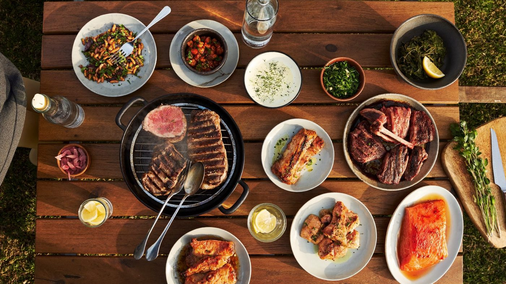
Kohle · Gas · Geduld
Verlässliche Rezepte mit exakten Zeiten und Temperaturen — für Gasgrill, Holzkohle und Dutch Oven.
Kennst du ein gutes Grill-Video oder ein Lieblingsrezept, das hier noch fehlt? Schick uns den Link oder eine kurze Beschreibung — wir schauen es uns an und bereiten es ggf. als eigenes Rezept auf.
Jan Oberle
Uruguay 973
Buenos Aires
Argentinien
E-Mail: 5hitcake92@gmail.com
Jan Oberle
Uruguay 973
Buenos Aires
Argentinien
Diese Seite enthält vereinzelt Affiliate-/Partnerlinks (als „Anzeige" gekennzeichnet). Beim Kauf über einen solchen Link erhalte ich ggf. eine kleine Provision, ohne dass sich der Preis für dich ändert.
Trotz sorgfältiger inhaltlicher Kontrolle übernehme ich keine Haftung für die Inhalte externer Links. Für den Inhalt der verlinkten Seiten sind ausschließlich deren Betreiber verantwortlich.
Jan Oberle
Uruguay 973
Buenos Aires, Argentinien
E-Mail: 5hitcake92@gmail.com
Diese Website wird über GitHub Pages gehostet (GitHub, Inc., 88 Colin P. Kelly Jr. St, San Francisco, CA 94107, USA). Beim Aufruf der Seite verarbeitet GitHub automatisch technische Daten (u.a. IP-Adresse, Zeitpunkt des Zugriffs) in Server-Logs, um die Seite auszuliefern. Dies geschieht unabhängig von meinem Einfluss; weitere Informationen findest du in der Datenschutzerklärung von GitHub.
Wenn du Rezepte als Favorit markierst, wird diese Auswahl ausschließlich lokal in deinem Browser gespeichert (localStorage). Diese Daten verlassen deinen Browser nicht und werden nicht an mich oder Dritte übermittelt. Du kannst sie jederzeit über die Browser-Einstellungen löschen.
Diese Seite setzt keine Cookies und keine Analyse- oder Tracking-Tools (z.B. Google Analytics) ein.
Wenn du über den Button „Rezept einsenden" einen Vorschlag schickst, öffnet sich dein eigenes E-Mail-Programm. Die Übermittlung erfolgt freiwillig direkt an meine E-Mail-Adresse (5hitcake92@gmail.com) und unterliegt den Datenschutzbestimmungen deines E-Mail-Anbieters. Ich nutze die übermittelten Daten ausschließlich, um den Rezeptvorschlag zu bearbeiten.
Einzelne als „Anzeige" gekennzeichnete Links führen zu externen Partnerseiten (z.B. Digistore24-Angeboten). Nach dem Klick gelten die Datenschutzbestimmungen des jeweiligen Anbieters; ich habe auf die dortige Datenverarbeitung keinen Einfluss.
Da auf dieser Seite keine personenbezogenen Daten durch mich serverseitig gespeichert oder verarbeitet werden, bestehen aktuell keine entsprechenden Datenbestände bei mir, auf die sich Auskunfts-, Berichtigungs- oder Löschungsrechte beziehen könnten. Bei Fragen kannst du dich jederzeit per E-Mail an mich wenden.
Grillbibel · Empfehlungen
Ausgewählte Produkte und Ratgeber rund ums Grillen und Genießen. Diese Seite enthält Affiliate-/Partnerlinks: Kauft ihr über einen dieser Links, bekommen wir ggf. eine kleine Provision — für euch ändert sich am Preis nichts. Empfohlen wird trotzdem nur, was wir selbst gut finden.
Noch keine Produkte in dieser Kategorie — Weber führt gleich mehrere Partnerprogramme (u. a. über Awin), Bewerbung steht noch aus.
Noch keine Produkte in dieser Kategorie — z. B. grillshop.at oder Grill-Profi-Shop, Bewerbung steht noch aus.
Noch keine Produkte in dieser Kategorie — Partnerprogramm läuft über das uppr Performance Network, Bewerbung steht noch aus.
Noch keine Produkte in dieser Kategorie — Kandidaten sind Gourmetfleisch.de, YourBeef und Albers Food Shop (je bis zu 10% pro Sale), Bewerbung steht noch aus.
Keto-Check: Fleisch & Wurstwaren
Ratgeber, welche Fleisch- und Wurstwaren zur ketogenen Ernährung passen — praktisch, wenn beim Grillabend auch Low-Carb-Gäste mit am Tisch sitzen.
Grillbibel · Rezept 001
Ein Fleisch, drei Wege. Grillmethode auswählen — Zutaten, Werkzeug und Ablauf unterscheiden sich mehr, als man denkt.
Fleisch parieren
Schweinenacken abtasten und grobe Sehnen, Knorpel oder Knochenreste entfernen. Bei gut marmoriertem Fleisch ist kaum etwas zu tun.
Injizieren optional
Nur bei magerem Fleisch nötig. Marinade verrühren, bis sich Salz und Zucker vollständig aufgelöst haben. Alle 3 cm bis zur Mitte des Fleischs einstechen, Spritze kurz halten, dann langsam herausziehen.
Trocken würzen
Rub großzügig und gleichmäßig auf allen Seiten und Kanten verteilen — ruhig ein zweites Mal übergehen. Senf als Kleber für den Rub ist nicht nötig, er haftet auch ohne.
Auf den Rost setzen
Fleisch auf ein Rost in die Schale legen — so ausgerichtet, dass beim Schrumpfen genug Abstand nach oben bleibt. Berührt das Fleisch später den Deckel, verbrennt die Oberfläche statt zart zu zerfallen — der Deckel wird bis zu 150 °C heiß.
Räuchern optional — 2 Std
Grill nicht vorheizen. Apfelchips in Räucherbox oder Alufolie-Päckchen auf einen äußeren Brenner legen und diesen auf kleinste Stufe stellen. Zieltemperatur so niedrig wie möglich, idealerweise unter 120 °C. Chips alle 30–80 Min. (2–3×) erneuern. Wer weniger Rauchgeschmack mag, überspringt diese Phase und startet direkt mit dem Garen (dauert dann insgesamt länger).
Garen im eigenen Dampf — 3–6 Std
Wasser in die Schale geben, ohne dass es das Fleisch berührt. Schale mit einer zweiten Schale oder Alufolie dicht abdecken — eine undichte Schale bedeutet trockenes Fleisch, also lieber zweimal prüfen. Deckeltemperatur 150 °C (Toleranz 140–180 °C). Außenbrenner auf mittlere Stufe stellen. Zu Beginn einen Innenbrenner max. 30 Min. auf volle Leistung drehen, damit die Flüssigkeit schneller dampft — danach abschalten, die Außenbrenner halten die Temperatur. Nach ca. 2 Std zwei Kerntemperatur-Fühler an unterschiedlichen Stellen einstechen. Fertig, wenn der niedrigere Wert 95 °C erreicht. Je größer das Stück, desto länger — bei 3,5 kg realistischerweise mit 5–6 Std rechnen.
Ruhen & pullen
Fleisch noch etwas in der Restflüssigkeit ziehen lassen — das bringt zusätzliche Saftigkeit. Dann mit zwei Gabeln oder den Händen zerpflücken und mit BBQ-Sauce servieren.
Fleisch parieren
Grobe Sehnen, Knorpel oder Knochenreste entfernen. Bei gut marmoriertem Fleisch ist kaum etwas zu tun.
Würzen
Rub großzügig aufbringen und leicht einmassieren. Ein Öl-Kleber ist nicht nötig, wenn das Fleisch noch feucht ist — der Rub haftet trotzdem gut.
Minion-Ring aufbauen
Lüftungsschieber oben und unten nur einen kleinen Spalt öffnen (ca. ein Viertel). Zieltemperatur 107–110 °C. Räucherholz-Chunks auf die Starterkohlen legen.
Fleisch auflegen
Auffangschale unter das Rost stellen, Fleisch in die indirekte Zone gegenüber der Glut legen, Kerntemperatur-Fühler einstecken. Deckel schließen.
Garen — ca. 14 Std
Am besten über Nacht: Nicht öffnen, keine Flüssigkeit nötig. Fertig, wenn die Kerntemperatur 93–95 °C erreicht. Je größer das Stück und je kälter es draußen ist, desto länger kann es dauern.
Einwickeln & ruhen — 2–4 Std
Fleisch mit feuerfesten Handschuhen vom Grill nehmen, in 2–3 Lagen Alufolie einwickeln. In eine auf ca. 60 °C temperierte Warmhaltebox legen, oder in eine Kühlbox mit ein paar Flaschen heißem Wasser. Macht das Fleisch noch saftiger und überbrückt die Zeit bis zum Servieren.
Pullen & servieren
Mit zwei Gabeln oder den Händen zerpflücken und mit BBQ-Sauce servieren.
Fleisch parieren
Knochenreste, Sehnen und harte Fettstücke außen entfernen. Das intramuskuläre Fett im Nacken reicht für die Saftigkeit völlig aus.
Zwiebel-Boden vorbereiten
Zwiebeln vierteln und so in den Dutch Oven legen, dass der Boden komplett bedeckt ist — notfalls eine weitere Zwiebel dazu. Die Zwiebeln wirken als Puffer, damit das Fleisch nicht direkt auf dem heißen Metall aufliegt und dort verbrennt.
Flüssigkeit angießen
So viel Wasser oder Apfelsaft angießen, dass der Boden feucht ist. Es verdampft ohnehin nur — für eine spätere Sauce ist Apfelsaft die bessere Wahl.
Würzen
Rub mit Raucharoma-Anteil großzügig auftragen — das ersetzt hier das fehlende offene Räuchern.
Fleisch einsetzen
Nacken auf die Zwiebeln legen. Ist er zu groß für den Topf und würde Deckel oder Rand berühren: zusätzliche Zwiebelscheiben dazwischenlegen. So bleibt der Kontakt zum Metall immer unter 100 °C.
Grill einrichten
Dutch Oven mittig auf den Grill (Gas oder Kohle funktioniert gleich gut). Zu Beginn alle Brenner an: die zwei Brenner unter dem Topf niedrig, die äußeren zwei auf voller Stufe — das bringt die Flüssigkeit schneller zum Köcheln. Einen Fühler direkt in den Garraum des Topfs stecken (nicht ins Fleisch).
Garen — ca. 3 Std
Sobald die Garraumtemperatur zwischen 100–130 °C liegt: äußere Brenner aus, nur die Brenner unter dem Topf auf niedrigster Stufe weiterlaufen lassen. Steigt die Temperatur trotzdem über 140 °C: Brenner unter dem Topf ebenfalls aus und stattdessen über die äußeren Brenner indirekt heizen, Deckeltemperatur dabei bei 150–180 °C halten. Nach 1,5–2 Std den zweiten Fühler ins Fleisch stechen. Fertig bei 95 °C Kerntemperatur, meist nach rund 3 Std.
Warmhalten, falls nötig
Ist das Fleisch früher fertig als die Gäste da sind: Grill ausschalten, Deckel kurz öffnen, damit Dampf entweicht, dann wieder schließen. So hält es sich weitere 30–60 Min, ohne auszutrocknen.
Pullen & servieren
Mit zwei Gabeln zerpflücken. Wirkt es zu trocken, 1–2 EL vom Sud aus dem Topf unterheben. Mit BBQ-Sauce servieren.
Grillbibel · Rezept 002
Das dickste Stück auf der Karte — und das mit der meisten Geduld. Grillmethode wählen: Gasgrill, Kugelgrill oder Dutch Oven.
Brisket parieren
Das Brisket besteht aus zwei Teilen: dem flachen, magereren "Flat" und dem fetteren "Point" darüber. Überschüssiges Fett großzügig abschneiden — Präzision wie bei einer Grillmeisterschaft ist für den Hausgebrauch nicht nötig, was dranbleibt, bleibt dran. Die graue, verfärbte Schnittfläche an der Trennstelle zwischen Flat und Point komplett wegschneiden und entsorgen. Übrige Abschnitte aufheben, z. B. für Hackfleisch. Scharfe Ecken und Kanten rundschneiden, damit sie auf dem Grill nicht verbrennen.
Grill einregeln
Die beiden äußeren Brenner auf mittlere bis Dreiviertel-Stufe stellen, die mittlere, indirekte Zone bleibt aus — hier kommt später das Brisket hin. Zieltemperatur am Deckel 150–180 °C, nicht darüber. Bei 3 Brennern wird es etwas enger, das Brisket muss dann stärker zusammengeschoben werden.
Würzen
Rub sehr großzügig auf allen Seiten auftragen — bei einem so dicken Stück Fleisch darf es ruhig viel sein.
Räucherboxen vorbereiten
Zwei Räucherboxen oder Alufolie-Päckchen gleichzeitig verwenden — das bringt bei einem Gasgrill deutlich mehr Rauch als eine Box allein. Je zwei Handvoll Chips pro Box, bei Alufolie-Päckchen oben ein paar Einstiche für den Rauchaustritt. Über die beiden äußeren Brenner platzieren.
Brisket auflegen
Diagonal über die mittlere, indirekte Zone legen, sodass es nicht direkt über einer Flamme liegt. Die Räucherboxen so positionieren, dass sie zusätzlich etwas Hitze abschirmen.
Räuchern — 2–3 Std
Räucherchips stündlich nachlegen (bei 3 Std insgesamt 3× nachlegen). Mit 2 Std Rauch wird das Ergebnis nur etwas weniger intensiv im Aroma, aber genauso gut. Das Brisket zieht sich beim Garen zusammen — zwischendurch ruhig etwas drehen, damit es zentriert über der indirekten Zone bleibt.
Einwickeln — ca. 3 Std bis 96 °C
In Butcher Paper eng in 1–2 Lagen einwickeln (nur ein kleiner Schuss Flüssigkeit nötig, das Fleisch gibt selbst genug Saft ab) — oder in einer Schale mit Rost, ca. 1 l Flüssigkeit und einer zweiten Schale als Deckel. Gleiche Grilleinstellung wie vorher beibehalten. Zwei Kerntemperatur-Fühler einstechen — einen ins Flat, einen ins Point — und nach dem niedrigeren Wert richten. Zieltemperatur exakt 96 °C: darunter sind die Kollagenstrukturen noch nicht ausreichend zerfallen und das Fleisch bleibt zäh.
Erste Ruhephase im Grill — 1 Std
Bei 96 °C einen Brenner ausschalten und das Brisket etwas vom verbleibenden Brenner wegschieben. Zieltemperatur 90–95 °C halten, nicht über 100 °C — sonst gart es weiter statt nur zu ruhen. Diese Phase nicht überspringen: Erst hier setzt sich die Zartheit richtig durch.
Finale Ruhephase — 1–4 Std
Vom Grill nehmen, in Alufolie einwickeln (schützt eine wiederverwendbare Box vor Feuchtigkeit) und in eine Isolier- oder Styroporbox legen. Mindestens 1 Std ruhen lassen, gerne länger — es wird dabei nur noch zarter. Fertig, wenn sich die Thermometer-Fühler beim Herausziehen butterweich anfühlen.
Anschneiden & servieren
Gegen die Faser in Scheiben schneiden. Das Point-Stück ist durch seinen höheren Fettanteil besonders saftig. Übrige Abschnitte lassen sich z. B. zu Hackfleisch weiterverarbeiten.
Grill vorbereiten
Kohlekorb an einer Seite des Grills platzieren, damit ein großer indirekter Bereich entsteht. Anzündkamin mit Holzkohle starten (brennt heißer als Briketts, gut zum Anfeuern) und in den Kohlekorb geben. Räucherholz-Chunks optional dazulegen. Rost auflegen und aufheizen lassen — Lüftungsregler dabei zunächst komplett offen, damit der Grill gut durchzieht.
Würzen
SPG-Rub großzügig auf allen Seiten auftragen, kurz anziehen lassen. Bei einem gut zugeputzten Stück ist kaum Parieren nötig — sonst wie beim Gasgrill überschüssiges Fett großzügig wegschneiden.
Temperatur einregeln
Unteren Lüftungsregler auf niedrige Stufe drosseln, oberen auf etwa ein Drittel bis knapp die Hälfte, bis sich eine Deckeltemperatur von 140–150 °C einstellt — nicht darüber. Kerntemperatur-Fühler in die dickste Stelle des Bristkets stecken, meist im Bereich des Points.
Offen garen — ca. 3 Std bis 70 °C
Brisket in die indirekte Ecke legen, genug Abstand zur Grillwand lassen, damit Luft zirkulieren kann. Deckel schließen, Temperatur bei 140–150 °C halten, bis die Kerntemperatur ca. 70 °C erreicht.
In Butcher Paper einwickeln
Straff in Butcher Paper einwickeln, einen Schuss heiße Rinderbrühe als zusätzliche Flüssigkeit dazugeben — das hilft dem Fleisch über die Plateau-Phase. Zurück auf den Grill, Deckeltemperatur jetzt 150–160 °C.
Weitergaren bis zart — ca. 5 Std
95 °C Kerntemperatur ist nur ein Richtwert. Entscheidend ist die Garprobe: Mit einem Holzspieß oder Thermometer-Fühler einstechen — geht er widerstandslos wie durch Butter hinein, ist das Brisket fertig. Insgesamt realistisch mit rund 8 Std ab Start rechnen.
Ruhen — mind. 45 Min
In eine Isolierbox legen und mindestens eine Dreiviertelstunde ruhen lassen, bevor angeschnitten wird.
Anschneiden & servieren
Gegen die Faser aufschneiden, sowohl vom Flat als auch vom Point.
Brisket parieren
Fettauflage von beiden Seiten nach Geschmack zurückschneiden — muss nicht komplett runter.
Würzen
Rub großzügig auf allen Seiten auftragen, sodass möglichst viel davon haften bleibt.
Räuchern optional — 2,5 Std
Für zusätzliches Raucharoma das Brisket auf einem Kamado-/Keramikgrill mit ordentlich Holzrauch räuchern. Ohne Kamado kann dieser Schritt entfallen — dann direkt mit dem Dutch Oven weitermachen, das Ergebnis wird dann eher wie ein Schmorbraten statt mit ausgeprägtem Rauchring.
Dutch Oven vorbereiten
Etwas Olivenöl in den Dutch Oven geben, ein paar Kohle-Briketts unterlegen. Grob geschnittenes Suppengemüse auf den Boden geben.
Brisket einsetzen
Brisket auf das Gemüse legen — darauf achten, dass es den Deckel nicht berührt, notfalls Ecken etwas nach unten biegen. Das dunkle Bier dazugeben.
Schmoren — 3–3,5 Std
Deckel schließen und weitergaren. Gegen Ende die Faserstruktur prüfen — lieber eine halbe bis ganze Stunde länger lassen als zu früh vom Feuer nehmen.
Anschneiden & servieren
Gegen die Faser aufschneiden. Trotz der kurzen Gesamtzeit bildet sich ein überraschend kräftiger Rauchring.
Grillbibel · Rezept 003
Kurz, heiß, präzise. Grillmethode wählen: Gasgrill oder Kugelgrill — die Grundprinzipien gelten für beide.
Garstufen — Kerntemperatur beim Herausnehmen
| Garstufe | Kerntemperatur |
|---|---|
| Rare (blutig) | 45–50 °C |
| Medium Rare Standard hier | 52–54 °C |
| Medium | 57–60 °C |
| Medium Well | 62–65 °C |
| Durch (Well Done) | 68 °C+ |
Steak auswählen
Gut marmoriertes, mindestens 3 cm dickes Steak wählen — je dicker, desto leichter trifft man später den perfekten Garpunkt. Wichtig: gerade geschnitten, nicht keilförmig, sonst wird eine Seite fertig, während die andere noch roh ist. Bei mehreren Gästen lieber ein großes Stück kaufen als viele kleine.
Temperieren — 1,5 Std
Steak 1,5 Std vor dem Grillen aus dem Kühlschrank nehmen und bei Zimmertemperatur liegen lassen, damit sich der Kern schon etwas erwärmt — das Ergebnis wird dadurch gleichmäßiger.
Würzen — 15–20 Min vorher
Beidseitig großzügig mit Meersalzflocken bestreuen und einwirken lassen. Vorher oder nachher salzen ist letztlich Geschmackssache — vorher sorgt aber für eine intensivere Kruste.
Grill vorheizen
Alle Brenner auf volle Stufe, mindestens 15 Min, bis die Deckeltemperatur 280 °C+ erreicht. Rost abbürsten, dann mit einer in Rapsöl getauchten halbierten Gemüsezwiebel einölen — geschmacksneutral und hitzebeständig. Ziel sind gleichmäßige braune Röstaromen, nicht schwarz Verbranntes.
Angrillen nach der Uhr-Methode
Steak auf die 10-Uhr-Position legen, Deckel schließen (weniger Sauerstoff = weniger Stichflammen durch tropfendes Fett), 1:30 Min angrillen. Dann auf die 2-Uhr-Position drehen, weitere 1:30 Min. Seite wechseln und das Muster wiederholen.
Indirekt fertiggaren
Steak auf die erhöhte Ablage bzw. in die kühlere Zone legen — wie ein Umluftofen. Nur einen Brenner auf kleinster Stufe lassen, alle anderen aus, Steak nicht direkt über dem verbleibenden Brenner platzieren. Zieltemperatur im indirekten Bereich 120–150 °C — auf Rosthöhe gemessen, nicht am Deckel, da die Deckelanzeige oft deutlich mehr zeigt. Zu heiß presst wie bei einem ausgedrückten Schwamm den Fleischsaft raus und macht das Steak trocken.
Kerntemperatur prüfen
Fühler seitlich bis zur Mitte einstechen, dabei leicht wackeln, um den wirklichen Kern zu treffen. Ziel 52–54 °C für Medium Rare (Standard hier — andere Garstufen siehe Tabelle oben). Steak schon 1–2 °C vor der Zieltemperatur vom Grill nehmen — es zieht beim Ruhen weiter nach.
Ruhen & anschneiden
Mindestens 3 Min offen ruhen lassen — niemals in Alufolie, das staut die Hitze und presst weiter Saft heraus. Erst jetzt frisch gemahlenen Pfeffer aufgeben. Gegen die Faser aufschneiden, das macht das Fleisch angenehmer zu kauen.
Garstufen — Kerntemperatur beim Herausnehmen
| Garstufe | Kerntemperatur |
|---|---|
| Rare (blutig) | 45–50 °C |
| Medium Rare Standard hier | 52–54 °C |
| Medium | 57–60 °C |
| Medium Well | 62–65 °C |
| Durch (Well Done) | 68 °C+ |
Steak auswählen
Gut marmoriertes, mindestens 3 cm dickes Steak wählen, gerade geschnitten statt keilförmig — sonst gart eine Seite ungleich zur anderen.
Temperieren — ca. 1 Std
Verpackungsfeuchtigkeit mit Küchenpapier abtupfen (völlig normal), dann das Steak ca. 1 Std bei Zimmertemperatur ruhen lassen. Wer es eilig hat, kann das Steak auch direkt kalt aus dem Kühlschrank auflegen — durch das kurze scharfe Angrillen und das anschließende langsame indirekte Nachziehen wird es trotzdem gleichmäßig gar.
Grill vorbereiten
Anzündkamin mit Holzkohle starten, glühende Kohle in 1–2 Kohlekörbe für die direkte Zone geben (ohne Körbe: Kohle in eine Ecke häufen, ca. 1/3 bis 1/2 der Grillfläche). Mindestens 15 Min insgesamt durchziehen lassen, für gleichmäßige Röstaromen. Auf hochwertige, gut verpresste Holzkohle achten — zwei Stücke gegeneinander geschlagen sollten hell und "gläsern" klingen, nicht dumpf. Wer einen zweiten Rost übrig hat, kann ihn schon jetzt abseits der Glut auflegen, damit die indirekte Zone von Anfang an kühl bleibt.
Würzen
Grobes Meersalz beidseitig aufgeben.
Rost vorbereiten
Kurz vor dem Auflegen abbürsten und einölen, damit das Fleisch weniger klebt. Bei magerem Fleisch alternativ dünn mit Mayonnaise bepinseln.
Angrillen
Steak in die direkte Zone über der Glut legen, je Seite ca. 1 Min scharf anbraten — auf dem Kohlegrill geht das wegen der hohen Hitze sehr schnell.
Indirekt fertiggaren — ca. 10 Min
Steak so weit wie möglich weg von der Glut in den indirekten Bereich legen. Bei einem Tomahawk oder anderem Steak mit Knochen den Knochen zur Glut hin ausrichten — er schirmt das Fleisch dahinter etwas ab. Lüftung oben und unten auf wenig stellen, Lüftungslöcher zusätzlich vom Steak weg ausrichten. Zieltemperatur 120–150 °C — auf Rosthöhe gemessen, nicht am Deckel. Nach dem scharfen Angrillen darf die Grilltemperatur ruhig weiter absinken, während das Steak fertigzieht — nur beim Angrillen selbst zählt die volle Hitze.
Kerntemperatur prüfen
Fühler seitlich bis zur Mitte einstechen. Bei ca. 55 °C vom Grill nehmen (Standard hier: Medium Rare — andere Garstufen siehe Tabelle oben) — es zieht beim Ruhen noch etwa 2 °C nach.
Ruhen & anschneiden
Ca. 5 Min offen ruhen lassen (nie in Alufolie), dann gegen die Faser aufschneiden und bei Bedarf nachsalzen. Ist eine Scheibe noch recht groß, sie ruhig noch einmal quer zur Faser teilen — das macht sie spürbar zarter.
Grillbibel · Rezept 004
Grillmethode wählen — Gasgrill und Kugelgrill nutzen hier zwei komplett unterschiedliche Abläufe.
Silberhaut entfernen
Mit einem Löffelstiel mittig unter die glänzende Silberhaut auf der Rückseite fahren, anheben und möglichst in einem Stück abziehen. Wichtig aus drei Gründen: Gewürz zieht sonst nicht ein, die Rippchen ziehen sich beim Garen stärker zusammen, und die Haut stört später im Mundgefühl.
Einfetten
Rippchen dünn mit Rinderfett oder einem Öl nach Wahl einreiben — sorgt für eine leichte Antihaft-Wirkung und bessere Röstaromen. Noch nicht würzen, das kommt erst nach dem Angrillen.
Angrillen — 15 Min
Drei Brenner auf volle Leistung stellen — unabhängig davon, ob der Grill 3, 4 oder 5 Brenner hat, reichen immer drei auf voller Stufe. Rippchen direkt darüber für 15 Min angrillen, für ordentliche Röstaromen. Echtes Raucharoma gibt es auf dem Gasgrill ohnehin nicht — das kompensiert diese Phase.
Würzen
Erst jetzt den Rub großzügig auftragen. Vorher gewürzt, würden Bestandteile der Gewürzmischung in der heißen Angrill-Phase verbrennen.
Einpacken
In Butcher Paper straff einwickeln, dabei ein paar Klekse vom Fett, etwas BBQ-Sauce und die gewählte Flüssigkeit mit einpacken, das Paket fest zudrehen.
Dämpfen im indirekten Bereich — ca. 3 Std
Mittlere Brenner aus, äußere an, Deckeltemperatur max. 180 °C. Für die ersten 30 Min die äußeren Brenner etwas höher lassen, damit die Flüssigkeit zügig zu dampfen beginnt — danach auf 180 °C zurückregeln. Ab Start des Dampfens ca. 2,5–3 Std ziehen lassen. Fertig, wenn sich das Fleisch sichtbar von den Knochenenden zurückgezogen hat und sich weich, aber nicht zerfallend anfühlt.
Glasieren — max. 30 Min
BBQ-Sauce mit Ahornsirup oder Honig verrühren, Rippchen damit bepinseln. Bei gleicher Grilleinstellung zurück auf den Grill, dabei ein- bis zweimal nachpinseln. Maximal 30 Minuten — ein häufiger Fehler ist, sie hier zu lange liegen zu lassen, dann werden sie nur noch trockener. Ziel ist nur das Karamellisieren der Glasur, kein weiteres Garen.
Servieren
Fertig, wenn die Glasur leicht angetrocknet ist und das Fleisch butterweich auseinandergeht, ohne komplett zu zerfallen.
Silberhaut entfernen
Mit einem Löffel am Knochen entlang unter die Membran gehen, lösen und mit einem Küchentuch in einem Zug abziehen.
Würzen
Rub von beiden Seiten in einer Schale auftragen und gut einreiben — in einer Schale würzen, damit herunterfallender Rub nicht verloren geht.
Grill vorbereiten (Schnecken-Methode)
Kohle in einer langen Reihe ("Schnecke") für eine große indirekte Zone anordnen, optional Kirschholz-Chunks obenauf für Rauch. Im Anzündkamin ca. 7 Briketts durchglühen lassen und an den Anfang der Schnecke geben — das Feuer brennt sich dann langsam durch. Lüftung unten auf niedrigster Stufe, oben ca. 1/3 bis 1/2 offen, bis sich eine konstante 130 °C einstellen — je nach Grill und Kohle etwas unterschiedlich, notfalls nachregeln.
Räuchern — 3 Std
Rippchen in einen Rippchenhalter stellen (dicke Fleischseite nach unten), auf den Rost in die indirekte Zone, Deckel zu, 130 °C halten.
Dämpfen — 2 Std
Rippchen im Halter in eine Schale umsetzen, ca. 200 ml Cola oder Flüssigkeit nach Wahl hinzugeben. Mit einer zweiten Schale abdecken (statt Alufolie). Temperatur auf 130–140 °C, 2 Std dämpfen lassen.
Glasieren — ca. 20 Min + Nachziehen
BBQ-Glaze in einer separaten Schale auf dem Grill leicht erwärmen. Rippchen vorsichtig aus der Dämpfschale nehmen (das Fleisch hat sich schon von den Knochen zurückgezogen) und auf den Rost legen, mit der warmen Glaze bepinseln. Ca. 20 Min anziehen lassen, dann noch mal nachpinseln — insgesamt ca. 45 Min in dieser letzten Phase.
Servieren
Fertig, wenn das Fleisch butterzart ist und sich leicht vom Knochen löst, dabei aber noch saftig und rauchig bleibt.
Silberhaut entfernen
Mit einem kleinen Löffel unter die Membran auf der Rückseite gehen und in einem Zug abziehen.
Würzen
Rub sparsam auftragen — an Spareribs ist ohnehin nicht viel Fleisch dran, zu viel Rub wäre nur Verschwendung.
Dutch Oven auskleiden
Zwiebeln vierteln und den Boden komplett damit bedecken. Flüssigkeit bis knapp unter die Oberkante der Zwiebeln angießen — die Zwiebeln sollen noch leicht herausschauen, nicht komplett untergetaucht sein.
Schichten
Rippchen-Racks am Rand beginnend der Reihe nach aufrecht in den Topf stellen, bis er voll ist. Menge richtet sich nach der Topfgröße — muss nicht randvoll sein, funktioniert auch mit etwas Platz in der Mitte.
Grill einrichten
Deckel des Dutch Oven möglichst dicht schließen. Bei Gas: äußere Brenner auf volle Stufe für die indirekte Zone, Deckeltemperatur 160–200 °C. Bei Kohle: 5 Briketts unter den Topf, 10 oben drauf — hochwertige Briketts halten damit ca. 3 Std durch, sonst zwischendurch nachlegen.
Garen — 3 Std
Deckel geschlossen halten, die Flüssigkeit dämpft die Rippchen bei knapp über 100 °C im Topfinneren. Schließt der Deckel nicht ganz dicht: zwischendurch die Flüssigkeit prüfen und bei Bedarf nachgießen, damit nichts austrocknet oder anbrennt.
Glasieren
In den letzten 30 Min der Garzeit BBQ-Sauce über die Rippchen verteilen — kann alternativ auch schon zu Beginn erfolgen, der Unterschied ist gering.
Servieren
Fertig, wenn das Fleisch fast von selbst vom Knochen fällt. Beim Herausnehmen vorsichtig sein, die Racks brechen in diesem Zustand leicht.
Grillbibel · Rezept 005
Der Grillabend-Klassiker — mit zwei selbstgemachten Marinaden statt vormarinierter Supermarktware. Grillmethode wählen.
Garstufen — Kerntemperatur beim Herausnehmen
| Garstufe | Kerntemperatur |
|---|---|
| Saftig-rosa (modern) Standard hier | 63–65 °C |
| Durchgegart (traditionell, "gut durch") | 70–75 °C |
Fleisch zuschneiden
Nacken in dicke Steaks schneiden (ca. 2–2,5 cm) — lieber zwei oder drei dicke als viele dünne Steaks, die schnell austrocknen.
Marinieren
Steaks großzügig mit der gewählten Marinade einreiben bzw. kneten. Am besten einen Tag im Kühlschrank ziehen lassen, mindestens aber 2 Std.
Grill vorheizen
15–20 Min bei mittlerer Stufe vorheizen. Rost mit einer Drahtbürste reinigen und mit Öl einfetten (Sprühflasche oder Pinsel) — Brenner dabei kurz aus, um Stichflammen beim Einölen zu vermeiden.
Anbraten (Vorwärts-Methode)
Steaks bei mittlerer Hitze auflegen — nicht so scharf angrillen wie z. B. Rindfleisch, Zucker und Kräuter in der Marinade verbrennen leicht. Häufig wenden, damit die Marinade nicht schwarz wird; das fette Nackenfleisch verträgt das gut, ohne auszutrocknen.
Indirekt fertiggaren
Steaks nach dem Anbraten auf die obere, indirekte Ablage legen und dort fertigziehen lassen.
Kerntemperatur prüfen
Ziel 63–65 °C — bei 63 °C noch leicht rosa, bei 65 °C durchgegart, aber immer noch sehr saftig.
Garstufen — Kerntemperatur beim Herausnehmen
| Garstufe | Kerntemperatur |
|---|---|
| Saftig-rosa (modern) Standard hier | 63–65 °C |
| Durchgegart (traditionell, "gut durch") | 70–75 °C |
Fleisch zuschneiden
Nacken in dicke Steaks schneiden (ca. 2–2,5 cm) — lieber wenige dicke als viele dünne "Pantoffeln".
Marinieren
Steaks kräftig mit der gewählten Marinade einmassieren, abdecken und mindestens 1 Std im Kühlschrank ziehen lassen — je länger, desto intensiver der Geschmack.
Grill vorbereiten
Anzündkamin mit einer Mischung aus Briketts (brennen länger) und Kohle (höhere Spitzentemperatur) starten, ca. 15 Min durchglühen lassen.
Flat Grilling
Steaks direkt auf die heiße Glut bzw. den Rost legen. Tropfendes Öl erzeugt kurze Flammen — das ist beim Flat Grilling normal. Ständig bewegen und wenden, damit nichts verbrennt.
Kerntemperatur prüfen
Ziel wie beim Gasgrill: 63–65 °C.
Grillbibel · Rezept 006
Ein Topf, viele Schichten — Fleisch, Paprika und Zwiebeln senkrecht gestapelt, von Bacon umhüllt, butterzart geschmort. Nur im Dutch Oven, egal ob auf Gas oder Kohle.
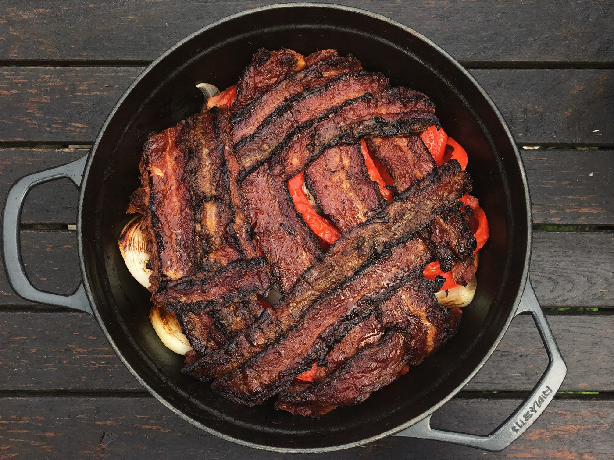
Rub mörsern
Fenchelsamen, Paprikapulver, Koriandersamen, Pfefferkörner, Salz und braunen Zucker grob im Mörser zerstoßen — nicht zu fein, Fenchel und Koriander dürfen noch als Stückchen sichtbar sein.
Fleisch zuschneiden
Nacken oder Schulter in ca. 2 cm dicke Scheiben schneiden.
Würzen
Rub sparsam auf beiden Seiten verteilen — bei der großen Fleischoberfläche wird es sonst schnell zu intensiv. Mit Frischhaltefolie fest auf die Oberfläche drücken (verhindert Oxidation). Mindestens 15 Min ziehen lassen, besser abgedeckt über Nacht im Kühlschrank.
Gemüse vorbereiten
Paprika in breite Streifen, Zwiebeln in dicke Ringe, Kartoffeln in ca. 1 cm dicke Scheiben schneiden. Knoblauchzehen mit der Messerseite zerdrücken.
Dutch Oven auskleiden
Kartoffelscheiben lückenlos auf den Boden legen — schützt vor Anbrennen und macht die Sauce später sämiger. Etwas Bacon auf die Kartoffeln legen, den restlichen Bacon locker über den Innenrand hängen lassen, sodass er oben überhängt.
Schichten
Fleisch, Paprika und Zwiebeln abwechselnd senkrecht in den Topf stellen — Reihenfolge frei, z. B. Fleisch–Paprika–Fleisch–Zwiebel–Zwiebel–Paprika–Fleisch. Lücken mit zusätzlichen Kartoffelscheiben auffüllen, damit die Schichten nicht zusammenfallen.
Abschluss
Zerdrückten Knoblauch obenauf verteilen, einen Schuss Weißwein und etwas BBQ-Sauce darübergeben. Die überhängenden Bacon-Streifen von den Seiten nach oben über das Fleisch klappen, dann den Deckel aufsetzen.
Garen — 2,5–3 Std
Auf dem Grill in die indirekte Zone stellen — bei Gas: äußere Brenner an, mittlerer aus; bei Kohle: ca. 1/3 der Briketts unter den Topf, 2/3 auf den Deckel. Deckeltemperatur bei 160–180 °C halten, Deckel möglichst geschlossen lassen.
Servieren
Fertig, wenn sich das Fleisch mit der Gabel butterzart auseinanderziehen lässt. Direkt aus dem Topf mit der eingekochten Sauce servieren.
Grillbibel · Rezept 007
Nur das Patty selbst — Fleischauswahl, Würzen, Wolfen, Formen und Grillen. Was am Ende auf den Burger kommt, bleibt komplett euch überlassen.
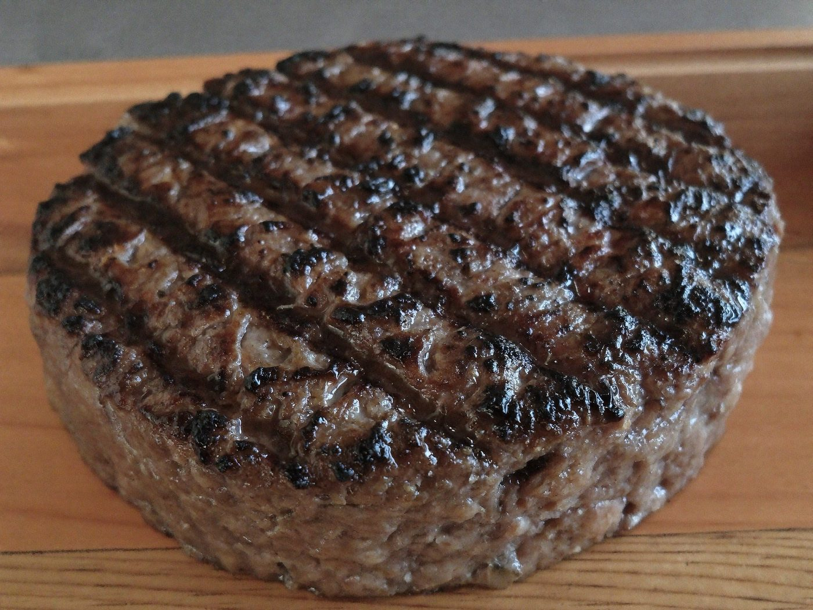
Garstufen — Kerntemperatur beim Herausnehmen
| Garstufe | Kerntemperatur |
|---|---|
| Rare | 49–52 °C |
| Medium Rare | 54–57 °C |
| Medium | 60–63 °C |
| Medium Well | 65–68 °C |
| Durch Standard hier | 70 °C+ |
Fleisch auswählen
Ein Stück mit 15–20 % Fettanteil wählen. Über 20 % führt schnell zu starkem Fettbrand auf dem Grill, deutlich weniger als 15 % wird trocken.
Zuschneiden
Fleisch in Würfel oder Streifen schneiden, die gut durch die Einfüllöffnung des Fleischwolfs passen.
Würzen vor dem Wolfen
Salz und Pfeffer direkt auf die Fleischstücke geben, bevor gewolft wird — verteilt sich beim Wolfen automatisch gleichmäßig, ohne dass später stark durchgeknetet werden muss (das würde die Bindung zu fest und zäh machen).
Wolfen
Durch eine grobe Lochscheibe (ca. 6–8 mm) drehen. Feines Hack, wie es oft im Supermarkt üblich ist, ergibt trockenere, dichtere Patties — die groben Fleischstränge sorgen für ein lockereres, saftigeres Ergebnis mit mehr Biss.
Formen
Ca. 200 g Fleisch pro Patty abwiegen (Faustregel für einen normalen Esser mit Beilagen — Vielesser nehmen gerne 2 Patties). Nur ganz leicht zu einer Kugel zusammendrücken, nicht kneten. Von oben vorsichtig flachdrücken — Dicke nach Geschmack, dünn und durchgegart oder dicker und medium.
Größe beachten
Patty deutlich größer formen als das spätere Burger-Brötchen — beim Grillen schrumpft es um ca. 20–30 %.
Grillen
Bei direkter, starker Hitze ca. 3–4 Min pro Seite grillen, einmal wenden.
Kerntemperatur prüfen
Mindestens 70 °C — Hackfleisch wird komplett durchgegart, nicht medium-rare wie ein Steak aus einem Stück.
Grillbibel · Rezept 008
Fingerfood-Klassiker mit drei Saucen-Varianten — von der Fertigsauce bis zur komplett selbstgemachten Glaze. Jeder findet was.
Flügel teilen
Mit dem Messer an der Hautseite bis zum Gelenk runterschneiden, das Gelenk aufknicken und zwischen den Knorpeln durchschneiden — geht ohne Widerstand, keine Knorpelreste, Messer bleibt scharf.
Würzen
Rub kräftig in die Wings einkneten, bis alles gleichmäßig bedeckt ist.
Grill vorheizen
Alle Brenner auf volle Stufe vorheizen.
Angrillen
Wings auflegen, Deckel darf geschlossen bleiben. Häufig und früh wenden. Grillfläche nicht überladen — Platz freihalten, um Wings bei einem Fettbrand schnell woanders hinlegen zu können.
Indirekt fertiggaren — 30–45 Min
Auf die indirekte Ablage über eine Auffangschale legen. Mittlere Brenner aus, äußere auf niedrigster Stufe für 130–150 °C. Das ergibt ein saftigeres Ergebnis als durchgehend bei 200 °C.
Kerntemperatur prüfen
Mindestens 75 °C, optimal 80 °C — deutlich darüber wird es trocken.
Glasieren — 10–20 Min
Wings in der gewählten Sauce schwenken, dann zurück auf den Grill bei geschlossenem Deckel, jetzt bei 150–180 °C. Bis die Sauce leicht antrocknet und karamellisiert — dickflüssigere Saucen brauchen kürzer, dünnere länger. Nicht länger als nötig, sonst trocknet das Hähnchen aus.
Servieren
Mit der restlichen Sauce als Dip servieren.
Flügel teilen
Mit dem Messer an der Hautseite bis zum Gelenk runterschneiden, das Gelenk aufknicken und zwischen den Knorpeln durchschneiden.
Würzen
Rub gleichmäßig auf allen Seiten der Wings verteilen.
Grill vorbereiten
Kohle anzünden und durchglühen lassen. Eine direkte Zone für den Anfang und das spätere Karamellisieren freihalten, dazu eine erhöhte, indirekte Ablage für die Garphase einrichten. Ziel-Temperatur 200–220 °C.
Indirekt garen — ca. 20 Min
Wings auf die erhöhte, indirekte Ablage legen, Deckel schließen — er wirkt wie ein kleiner Backofen und verteilt die Hitze gleichmäßig von allen Seiten. Deckel dabei möglichst wenig öffnen.
Glasieren
Ketchup-Sirup-Glasur gleichmäßig auf alle Seiten der Wings streichen.
Direkt karamellisieren
Wings kurz auf die direkte Zone legen und unter gelegentlichem Wenden anziehen lassen, bis die Glasur leicht antrocknet und Farbe annimmt. Deckel wie im Tipp oben beschrieben vorsichtig öffnen.
Garprobe
Mindestens 75 °C Kerntemperatur, Haut sollte knusprig und die Glasur leicht angetrocknet sein.
Servieren
Direkt vom Grill servieren — vom Vorbereiten bis zum fertigen Wing dauert es insgesamt keine 90 Minuten.
Grillbibel · Rezept 009
Vier Zubereitungsarten, gleiche Grundidee — wählt nach Ausrüstung und Vorliebe.
Hähnchen vorbereiten
Federkiele entfernen, falls vorhanden. Bürzel (Schwanzspitze) abschneiden — dort sitzen Fettdrüsen, die beim Grillen nicht gut schmecken. Bauchhöhle nach Fettresten absuchen und entfernen.
Würzen
Rub überall auftragen — auch unter der Haut an der Brust: Haut vorsichtig mit den Fingern lösen, direkt aufs Fleisch würzen, Haut zurücklegen. So kommt Geschmack nicht nur an die Oberfläche.
Auf den Spieß
Hähnchen auf den Drehspieß stecken. Mit den Krallen des Spießes die Keulen fixieren, mit den anderen die Flügel. Hält nichts von selbst fest: mit Küchengarn nachhelfen, sonst baumeln die Flügel und verbrennen.
Grill einrichten
Nur den Heckbrenner anmachen, auf mittlere Stufe (bei einem starken Heckbrenner reicht das, bei einem schwächeren auch bis Dreiviertel-Stufe) — lieber am Anfang etwas niedriger ansetzen, hochdrehen geht immer, runterdrehen bringt bei schon dunkler Haut nichts mehr. Deckel schließen.
Garen — 45–75 Min
Ziel-Deckeltemperatur 180–200 °C. Dauer hängt stark vom Gewicht des Hähnchens und der Grilltemperatur ab — deshalb unbedingt die Kerntemperatur kontrollieren statt nur die Zeit.
Kerntemperatur prüfen
Fühler an der dicksten, knochennahen Stelle einstechen (dort ist es am kältesten). Fertig ab 75 °C — diese Temperatur tötet eventuelle Krankheitserreger zuverlässig ab.
Hähnchen vorbereiten
Federkiele entfernen, falls vorhanden. Bürzel abschneiden, Bauchhöhle nach Fettresten absuchen und entfernen.
Würzen
Haut an der Brust vorsichtig lösen (nicht abziehen), Rub direkt aufs Fleisch geben, Haut zurücklegen — so bekommt nicht nur die Haut Geschmack. An mageren Stellen wie den Schenkeln vorher etwas Olivenöl einreiben, damit der Rub besser haftet. Von außen ebenfalls großzügig würzen.
Glas oder Halter befüllen
Einmachglas oder Hähnchenhalter mit Bier (oder Apfelsaft) befüllen. Hähnchen aufrecht daraufsetzen, Flügel nach hinten/unten verschränken, damit sie nicht abstehen.
Grill einrichten
Hähnchen mittig auf den Rost stellen. Linken und rechten Brenner anmachen, mittleren/Heckbrenner aus — reine indirekte Hitze. Deckel schließen.
Garen — 45–75 Min
Zunächst bei ca. 150 °C starten, dann auf 180 °C Deckeltemperatur hochregeln. Dauer hängt vom Gewicht des Hähnchens ab.
Kerntemperatur prüfen
Fühler an der dicksten, knochennahen Stelle einstechen. Fertig ab 75 °C.
Herausnehmen
Vorsichtig mit hitzefesten Handschuhen vom Grill nehmen — das Glas bzw. der Halter ist sehr heiß und das Hähnchen kann leicht kippen.
Hähnchen vorbereiten
Federkiele entfernen, falls vorhanden. Bürzel und Fettlappen im hinteren Bereich abschneiden.
Würzen
Gewürzpaste von innen und außen kräftig einreiben — auch die Flügel anheben und darunter einmassieren, damit überall Geschmack hinkommt.
Auf das Glas setzen
Bier öffnen, einen Schluck trinken, den Rest ins Glas bzw. den Halter füllen. Hähnchen aufrecht daraufsetzen und in die Auffangschale stellen.
Grill einrichten
Zwei Kohlekörbe links und rechts befüllen, sodass in der Mitte eine indirekte Zone entsteht. Hähnchen mit der Auffangschale mittig hineinstellen, Deckel schließen.
Garen
Einfach ziehen lassen, bis der Fühler 75–80 °C anzeigt. Je nach Außentemperatur und Grill kann das eine knappe bis anderthalb Stunden dauern.
Servieren
Das Fleisch fällt butterzart auseinander. Die Flüssigkeit aus der Auffangschale nicht wegschütten — über das aufgeschnittene Fleisch geben, das gibt noch mal richtig Geschmack.
Hähnchen vorbereiten
Federkiele entfernen, falls vorhanden. Bürzel abschneiden, Bauchhöhle nach Fettresten absuchen und entfernen.
Wirbelsäule auslösen
Mit einer scharfen Küchenschere auf beiden Seiten der Wirbelsäule entlangschneiden und sie herauslösen (alternativ mit einem Messer knapp daran vorbeischneiden). Anschließend das Hähnchen mit der Handfläche auf die Brust drücken, bis es sich flach ausfaltet — braucht keine große Kraft, ein leichtes Knacken ist normal.
Würzen
Rub überall auftragen, auch unter der Haut an der Brust.
Auflegen
Flach mit der Hautseite nach oben auf den (Ablage-)Rost legen, in die indirekte Zone. Deckel schließen.
Garen — 45–75 Min
Ziel-Deckeltemperatur 180–200 °C. Da das Fleisch flach ausgebreitet ist, gart es meist etwas schneller und gleichmäßiger als die anderen beiden Varianten.
Kerntemperatur prüfen
Fühler an der dicksten, knochennahen Stelle einstechen. Fertig ab 75 °C.
Grillbibel · Rezept 010
Schmeckt fast wie Pulled Pork, ist aber deutlich schneller fertig und günstiger. Kurz angrillt auf dem Gasgrill, dann im Dutch Oven fertig geschmort.
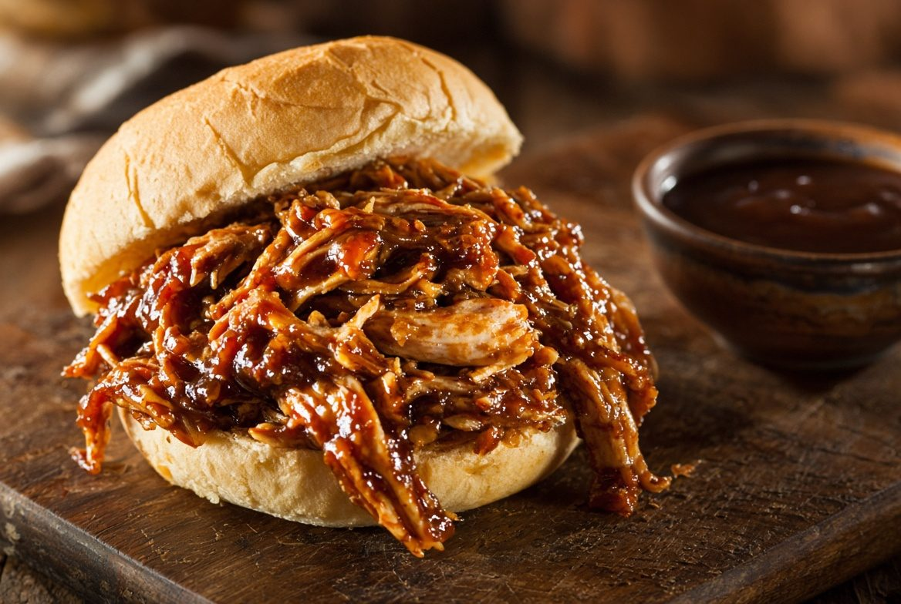
Fleisch parieren
Ausgelöste Keulen gründlich auf Knochensplitter und Sehnen/Knorpel absuchen und entfernen, besonders bei Großmarkt-Ware.
Würzen
Zuerst direkt mit Salz würzen — separat von der Öl-Marinade, denn Öl würde das Einziehen des Salzes verlangsamen. Danach die restliche Rub-Öl-Marinade darübergeben. Nicht lange ziehen lassen nötig, direkt an den Grill.
Angrillen
Auf dem vorgeheizten Gasgrill kurz und scharf angrillen, bis ordentlich Röstaromen da sind — dunklere Stellen sind kein Problem, sie geben nur Geschmack ab. Muss noch nicht durchgegart sein.
Dutch Oven vorbereiten
Boden mit Zwiebeln und Knoblauch auslegen. BBQ-Sauce, Ginger Ale, einen Schluck Worcestersauce und etwas Senf verrühren und über die Zwiebeln gießen.
Einlegen
Angegrilltes Fleisch auf die Zwiebel-Sauce-Basis legen. Das beim Angrillen aufgefangene Fett und den Bratensaft ebenfalls dazugeben — steckt viel Geschmack drin.
Garen — 2–2,5 Std
Deckel so dicht wie möglich schließen (bei manchen Modellen auf die Thermometer-Kerben achten, damit sie nicht übereinanderliegen). Bei 180 °C Deckeltemperatur auf den Grill. Nach ca. 1–1,5 Std kontrollieren, ob noch genug Flüssigkeit da ist. Fertig ab 90 °C Kerntemperatur, wenn sich das Fleisch leicht zupfen lässt — kann deutlich schneller gehen als bei Pulled Pork.
Sauce einkochen
Fleisch herausnehmen, den Sud ohne Deckel auf dem Grill oder Seitenkochfeld bei mittlerer Hitze um etwa zwei Drittel einkochen lassen, bis er vom Löffel läuft. Zwiebeln können mit eingekocht, herausgenommen oder für eine sämige Sauce mituntergemixt werden.
Pullen & vermischen
Fleisch mit zwei Gabeln zerpflücken — ruhig etwas stückig lassen, nicht zu klein zupfen. Mit der eingekochten Sauce vermischen.
Grillbibel · Rezept 011
Mager, schnell und leicht trocken, wenn man's falsch macht. Mit der richtigen Schnitttechnik und kurzer Grillzeit wird sie butterzart.
Sehne entfernen
Die weiße Sehne, die durch die Putenbrust verläuft, mit einem scharfen Messer knapp am Fleisch entlang herausschneiden. Dabei die Klinge möglichst nah am Bindegewebe halten, dann bleibt kaum Fleisch daran hängen.
In Steaks schneiden
Die Faserrichtung des Fleisches anschauen und quer dazu in dicke Scheiben schneiden. Quer zur Faser geschnitten werden die Fasern kürzer, das macht den Biss deutlich zarter als längs geschnitten. Dünnere Reststücke lassen sich prima würfeln und als Spieße mit Zwiebeln und Paprika verwerten.
Würzen
Fleisch abwiegen und den Rub im Verhältnis ca. 20 g pro Kilo dazugeben. Etwas Rapsöl darüber (Rapsöl statt Olivenöl — höherer Rauchpunkt und neutraler im Geschmack, Olivenöl kann Geflügel geschmacklich erschlagen). Gründlich von Hand einmassieren.
Ruhen lassen
Mindestens 1–2 Std im Kühlschrank ziehen lassen, ideal sind ca. 3 Std. Vakuumiert zieht die Würze noch etwas besser ein optional.
Grill vorheizen
Gasgrill auf hohe Stufe vorheizen, Ziel-Rosttemperatur um die 280 °C.
Angrillen — ca. 3–4 Min pro Seite
Steaks auf den heißen Rost legen und in Ruhe lassen, bis sie sich von selbst lösen (nicht vorher versuchen zu wenden). Dann wenden und die zweite Seite genauso angrillen, bis beide Seiten Farbe haben.
Indirekt fertiggaren — ca. 4 Min
Steaks auf die obere Ablage bzw. in die indirekte Zone legen, äußere Brenner auf niedrige Stufe für 160–180 °C stellen. Kurz fertigziehen lassen.
Kerntemperatur prüfen
Fertig ab 72 °C — das Fleisch ist dann innen durchgehend weiß statt glasig, aber noch saftig. Deutlich darüber wird sie trocken.
Servieren
Passt gut zu Salat oder gegrilltem Gemüse.
Würzen
Magic Dust großzügig auf allen Seiten und an den Kanten der Putenbrust verteilen und andrücken.
Grill einrichten
Kohle einseitig anhäufen, sodass eine indirekte Zone entsteht. Ziel-Temperatur 140–160 °C.
Auflegen
Putenbrust mit dem dickeren Ende Richtung Glut auf den Rost in die indirekte Zone legen — das dünnere Ende ist empfindlicher und gart sonst zu schnell durch. Kerntemperatur-Fühler mittig einstecken.
Räuchern & garen
Eine Handvoll Räucherchips auf die Glut geben, Deckel schließen. Ziehen lassen, bis der Fühler 80 °C anzeigt — Dauer hängt stark von Glutmenge und Witterung ab, deshalb unbedingt mit Fühler statt nach Zeit arbeiten.
Ruhen lassen
Vom Grill nehmen, in Backpapier und danach in Alufolie einwickeln. Kurz ruhen lassen, damit sich der Fleischsaft wieder verteilt.
Kaki-Sauce zubereiten
optional Wer auf die Sauce verzichten möchte, kann direkt beim Servieren weitermachen. Für die Sauce: etwas Sonnenblumenöl in der Pfanne auf dem Grill erhitzen. Zwiebel darin glasig dünsten, dann Knoblauch und Ingwer dazugeben und kurz mitdünsten. Paprika dazugeben und einige Minuten mitgaren.
Ablöschen & einkochen
optional Mit einem Schuss Weißwein ablöschen und kurz einkochen lassen, dabei den Bratsatz vom Pfannenboden lösen. Kaki-Würfel dazugeben, unterrühren und mit Salz abschmecken. Bei Bedarf noch etwas Weißwein für die gewünschte Konsistenz nachgießen.
Pürieren
optional Pfanne vom Feuer nehmen. Einen kleinen Teil der Mischung als stückige Einlage beiseitestellen, den Rest mit dem Pürierstab fein pürieren.
Servieren
Putenbrust aufschneiden. Wer die Sauce zubereitet hat, richtet sie mit der pürierten Kaki-Sauce sowie der stückigen Gemüse-Kaki-Mischung obenauf an — sonst schmeckt die Putenbrust auch pur hervorragend.
Fleisch vorbereiten
Die Haut der Fleischstücke mehrfach einschneiden, damit die Marinade besser einzieht.
Marinieren — über Nacht
Etwas Öl auf dem Fleisch verteilen, großzügig salzen, dann die Gewürzmischung auf beiden Seiten aufbringen. Gehackten Knoblauch und Zwiebelringe obenauf verteilen. In einen verschließbaren Behälter geben und über Nacht im Kühlschrank ziehen lassen.
Gemüse zuschneiden
Kartoffeln, Möhren, Paprika, Champignons und Weißkohl in mundgerechte Stücke schneiden.
Fleisch anbraten
Knoblauch und Zwiebel von der Marinade abnehmen und beiseitestellen. Die hautlose Seite des Fleischs dünn mit Mehl bestäuben. Öl im Dutch Oven stark erhitzen, Fleisch von allen Seiten kurz und scharf anbraten — nur die Oberfläche versiegeln, nicht durchgaren. Herausnehmen und beiseitestellen.
Gemüse anbraten
Im selben Topf zuerst Zwiebel und Knoblauch aus der Marinade anbraten, dabei den Bratensatz vom Boden lösen. Danach nacheinander Möhren, Weißkohl, Champignons und Paprika jeweils kurz anbraten und zur Seite schieben, bevor die nächste Zutat dazukommt — so bekommt jede Zutat eigenen Röstgeschmack.
Kartoffeln & Sauce
Kartoffeln dazugeben, mit der Honig-Senf-Soße übergießen und den beim Anbraten aufgefangenen Fleischsaft mit einrühren. Gut umrühren.
Schichten & bepinseln
Fleisch obenauf auf das Gemüse legen, alles großzügig mit der Sauce bepinseln.
Garen — mind. 1,5 Std
Deckel schließen. Auf dem Kohlegrill mit ca. 6 Briketts unter dem Topf und ca. 18 Briketts auf dem Deckel schmoren. Nach 30–40 Min Deckel kurz öffnen, Salz abschmecken und noch einmal mit Sauce bepinseln, dann Deckel wieder schließen und für mindestens eine weitere Stunde weiterschmoren.
Servieren
Fertig, wenn sich das Fleisch mit der Gabel butterzart zerteilen lässt — braucht praktisch kein Messer. Direkt aus dem Topf servieren, nach Belieben mit frischen Kräutern garnieren.
Grillbibel · Rezept 012
Auf dem Gasgrill mit Plancha und reiner Zeitmethode, auf dem Holzkohlegrill klassisch nach Fingergefühl — beides schnell, beides ohne viel Aufwand.
Beilagen würzen
Vorgekochte Kartoffeln und Brokkoliröschen getrennt mit reichlich Öl, Salz, Pfeffer und gepresstem Knoblauch vermengen.
Grill vorheizen
Brenner unter der Plancha ca. 15 Min auf voller Stufe vorheizen, danach auf ca. 3/4 zurückschalten. Die übrigen Brenner auf niedrigster Stufe zuschalten, damit die Deckeltemperatur bei ca. 200–250 °C bleibt.
Plancha einölen
Etwas Öl auf die Plancha geben und mit dem Silikonpinsel gleichmäßig verteilen.
Kartoffeln auflegen — ca. 20 Min
Kartoffeln mit Abstand zueinander auflegen und mit dem Pfannenwender platt drücken. Nach ca. 10 Min wenden, weitere 10 Min fertiggaren, bis sie knusprig sind.
Brokkoli dazugeben — ca. 20 Min
Kurz nach den Kartoffeln daneben auflegen, nicht plattdrücken. Regelmäßig wenden, bis er schön geröstet und noch knackig ist.
Lachs auflegen — nach ca. 12 Min
Eine freie Stelle der Plancha noch mal leicht einölen. Lachsfilet mit der Hautseite nach unten auflegen, Deckel schließen.
5 Minuten Hautseite
5 Min bei geschlossenem Deckel in Ruhe lassen, nicht wenden.
3 Minuten Fleischseite
Wenden, mit einem Tropfen Öl beträufeln, weitere 3 Min auf der Fleischseite fertiggaren.
Servieren
Mit Salz, Pfeffer und nach Belieben etwas Zitrone abschmecken. Zusammen mit Kartoffeln und Brokkoli servieren.
Beilagen würzen
Vorgekochte Kartoffeln und Brokkoliröschen getrennt mit reichlich Öl, Salz, Pfeffer und gepresstem Knoblauch vermengen.
Grill vorheizen
Brenner unter der Plancha ca. 15 Min auf voller Stufe vorheizen, danach auf ca. 3/4 zurückschalten. Die übrigen Brenner auf niedrigster Stufe zuschalten, damit die Deckeltemperatur bei ca. 200–250 °C bleibt.
Plancha einölen
Etwas Öl auf die Plancha geben und mit dem Silikonpinsel gleichmäßig verteilen.
Kartoffeln auflegen — ca. 20 Min
Kartoffeln mit Abstand zueinander auflegen und mit dem Pfannenwender platt drücken. Nach ca. 10 Min wenden, weitere 10 Min fertiggaren, bis sie knusprig sind.
Brokkoli dazugeben — ca. 20 Min
Kurz nach den Kartoffeln daneben auflegen, nicht plattdrücken. Regelmäßig wenden, bis er schön geröstet und noch knackig ist.
Lachs auflegen — nach ca. 12 Min
Eine freie Stelle der Plancha noch mal leicht einölen. Lachsstücke mit der Hautseite nach unten auflegen, Deckel schließen.
4 Minuten Hautseite
4 Min bei geschlossenem Deckel in Ruhe lassen, nicht wenden.
2 Minuten gegenüberliegende Seite
Wenden, weitere 2 Min auf der gegenüberliegenden Seite grillen.
Je 1 Minute Restseiten
Die beiden verbleibenden Seiten je 1 Min anrösten, sodass alle vier Seiten Farbe bekommen.
Servieren
Mit Salz, Pfeffer und nach Belieben etwas Zitrone abschmecken. Zusammen mit Kartoffeln und Brokkoli servieren.
Würzen
Lachsportionen mit Thymian, Rosmarin und gehacktem Knoblauch bestreuen, großzügig mit Olivenöl beträufeln. Mit Frischhaltefolie abdecken und kurz ziehen lassen.
Grill einrichten
Nur eine Hälfte des Kugelgrills mit Kohle befüllen — so entsteht eine heiße Zone zum Angrillen und eine kühlere Zone zum sanften Fertiggaren, mit mehr Kontrolle über den Garpunkt.
Rost vorbereiten
Grillrost zusätzlich leicht mit Öl abreiben, damit der Fisch nicht festklebt.
Auflegen
Lachs mit der Hautseite zuerst auf die heiße Zone legen — die Haut gibt Stabilität und hält den Fisch später saftig.
Wenden
Sobald die Oberseite nicht mehr roh-glasig aussieht und die Ränder goldgelb sind, einmal wenden.
Garprobe
Mit dem Fingertest prüfen (vergleichbar mit dem Handballen-Test bei Steak): für ein saftiges, noch leicht nachgiebiges Ergebnis in der kühleren Zone fertigziehen, das entspricht etwa 52–56 °C Kerntemperatur.
Fertigstellen — einfach
Mit Fleur de Sel und frisch gemahlenem Pfeffer würzen.
Fertigstellen — elegant
optional Ein Büschel Rosmarin und Thymian mit Küchengarn zusammenbinden, in Öl mit Salz und Pfeffer tauchen und den Lachs damit auf dem Grill bepinseln — bringt zusätzlichen Kräutergeschmack und extra Saftigkeit.
Servieren
Direkt vom Grill servieren.
Grillbibel · Rezept 013
Lammrücken ohne Silberhaut — auf dem Gasgrill klassisch mit Karo-Branding, auf dem Kohle-/Kamadogrill als schnelles Fingerfood mit schwarzem Knoblauch und frischer Minze.
Garstufen — Kerntemperatur beim Herausnehmen
| Garstufe | Kerntemperatur |
|---|---|
| Rare (blutig) | 50–53 °C |
| Rosa (Medium Rare) Standard hier | 54–57 °C |
| Medium | 58–62 °C |
| Durch (Well Done) | 65 °C+ |
Silberhaut entfernen
Falls noch vorhanden, mit einem scharfen Messer knapp unter der silbrig glänzenden Sehnenhaut entlangschneiden und vollständig abziehen — sie wird beim Grillen zäh.
Würzen & marinieren
Lammgewürz großzügig auf beiden Seiten aufbringen und andrücken, mit etwas Olivenöl beträufeln. In einen verschließbaren Beutel geben und mindestens 5 Std, besser über Nacht im Kühlschrank marinieren — je länger, desto tiefer ziehen die Kräuter ein.
Grill vorheizen
Auf ca. 250 °C direkte Hitze vorheizen. Rost gründlich reinigen — nur auf sauberem Rost geht die Hitze direkt ans Fleisch statt durch verbrannte Marinadenreste.
Erstes Anlegen — 1,5–2 Min
Lammlachs im 10-Uhr-Winkel auf den heißen Rost legen und angrillen.
Drehen für Karo-Muster — 1,5–2 Min
Um 90° auf den 14-Uhr-Winkel drehen (gleiche Seite bleibt unten), für das klassische Karo-Branding weitergrillen.
Rost reinigen & wenden
Rost kurz mit der Bürste säubern, dann das Fleisch wenden. Wieder im 10-Uhr-Winkel auflegen, 1,5–2 Min angrillen.
Zweite Seite branden — 1,5–2 Min
Rost erneut kurz reinigen, um 90° auf den 14-Uhr-Winkel drehen, weitere 1,5–2 Min fertiggrillen.
Ruhen lassen
Vom Grill nehmen und kurz ruhen lassen.
Servieren
In Scheiben schneiden und servieren.
Marinieren — über Nacht
Lammlachse in Olivenöl mit zerdrücktem schwarzem Knoblauch und etwas Salz ca. 12–14 Std im Kühlschrank marinieren.
Knoblauchöl ansetzen
Eine Knoblauchzehe in Olivenöl pressen, mit etwas Salz verrühren und mindestens 2 Std ziehen lassen.
Grill vorbereiten
Kohle- oder Kamadogrill mit reichlich Kohle auf volle Hitze bringen, Plancha-Aufsatz mit aufheizen. Die Platte ist zur Mitte hin am heißesten und wird nach außen kühler — für scharfes Anbraten näher zur Mitte arbeiten, für sanfteres Garen weiter außen.
Fleisch zuschneiden
Lammlachse diagonal in Scheiben schneiden — das ergibt mehr Fläche für Röstaromen und macht daraus perfekte Häppchen.
Auflegen
Scheiben mit der Marinade auf die Plancha geben, dabei nicht in die allerheißeste Zone, sondern etwas außerhalb platzieren, damit sie nicht sofort verbrennen und innen schön rosa bleiben.
Bepinseln
Während des Garens mehrfach mit dem Knoblauchöl bepinseln.
Garprobe
Ganz kurz garen und nach Gefühl prüfen, kein Thermometer nötig — Ziel ist innen noch rosa.
Fertigstellen
Vom Grill nehmen, mit frischer Minze und Rosmarin bestreuen — die frischen Kräuter kommen erst jetzt dazu, damit sie nicht verbrennen. Nach Bedarf noch etwas Salz.
Servieren
Sofort als Fingerfood bzw. Party-Appetizer servieren.
Grillbibel · Rezept 014
Rack of Lamb: auf dem Gasgrill klassisch mit Kräuter-Marinade, auf dem Kohlegrill mit Zitrus-Kräuter-Paste und Honig-Glasur zum perfekten Fingerfood.
Garstufen — Kerntemperatur beim Herausnehmen
| Garstufe | Kerntemperatur |
|---|---|
| Rosa (kräftiger blutig) | 54–57 °C |
| Medium Standard hier | 58–60 °C |
| Medium Well | 61–64 °C |
| Durch (Well Done) | 65 °C+ |
Trockentupfen
Lammkarrees gründlich mit Küchenpapier trockentupfen.
Silberhaut einritzen
Auf der Rückseite die Silberhaut mehrfach rautenförmig einritzen — sie ist dünn, einritzen reicht, komplettes Entfernen ist nicht nötig.
Fettdeckel einritzen
Auf der Vorderseite den Fettdeckel ebenfalls rautenförmig einritzen, aber nicht entfernen.
Sehne entfernen
Mit einem möglichst dünnen Messer die lang verlaufende Sehne vorsichtig unterfahren und Stück für Stück an der Klinge entlang herauslösen.
Würzen & marinieren
Salz, Pfeffer, gehackten Knoblauch, Rosmarin und einen Schluck Öl gleichmäßig auf beiden Seiten verteilen. In einen Beutel geben (im Idealfall vakuumiert) und mindestens 2 Std im Kühlschrank durchziehen lassen.
Kräuter entfernen
Vor dem Grillen Knoblauch- und Kräuterstücke von der Oberfläche abwischen — sie würden sonst auf dem Grill verbrennen. Salz und Pfeffer bleiben dran, die verbrennen nicht.
Angrillen
Hochtemperatur-/Sizzle-Zone mind. 5 Min vorheizen, dann das Karree von allen Seiten scharf anbraten.
Indirekt fertiggaren
In die Mitte des Grills in die indirekte Zone legen, äußere Brenner auf kleiner Stufe, Deckel schließen und fertigziehen lassen.
Kerntemperatur prüfen
Fertig bei 58–60 °C — innen nicht mehr blutig, aber noch leicht farbig und sehr saftig.
Ruhen & servieren
Kurz ruhen lassen, dann warm anschneiden und servieren.
Marinieren — 4–7 Std
Zitrus-Kräuter-Paste ins Lammkarree einmassieren, mit den restlichen Kräutern bedecken, abgedeckt im Kühlschrank ziehen lassen.
Kräuter entfernen
Vor dem Grillen die Kräuter- und Knoblauchstücke von der Oberfläche abstreifen und das Fleisch leicht abtupfen — sonst verbrennt das alles auf dem Grill.
Grill einrichten
Kugelgrill mit einer direkten und einer indirekten Zone vorheizen.
Angrillen — ca. 2–3 Min pro Seite
Karree auf der direkten Zone von allen Seiten scharf anbraten, dabei zwischendurch kurz den Deckel schließen. Für ein schönes Muster nach der halben Zeit pro Seite um 45° drehen.
Indirekt fertiggaren
In die indirekte Zone stellen (z. B. gegeneinander aufgestellt), Temperatur etwas herunterregeln. Kerntemperatur-Fühler einstecken, Zielwert 55 °C.
Glasieren
optional Sobald das Fleisch bei ca. 40–45 °C liegt, die Honig-Kräuter-Glasur darüberträufeln.
Herausnehmen & ruhen
Bei 55–56 °C vom Grill nehmen, locker mit Alufolie abdecken und ein paar Minuten ruhen lassen.
Servieren
Anschneiden, jetzt erst mit Salz und frisch gemahlenem Pfeffer würzen und servieren.
Grillbibel · Rezept 015
Auf dem Gasgrill komplett mit Gemüsebett aus dem Bräter, auf dem Kohlegrill Low & Slow mit Kräuter-Honig-Paste — beides führt zu butterzartem Ergebnis, nur der Weg ist ein anderer.
Fleisch parieren
Überschüssiges Fett von der Lammkeule abschneiden.
Gemüsebett vorbereiten
Kartoffeln, Schalotten, Paprika, Möhren, Knoblauch und Chili in Stücke schneiden und in den Bräter geben. Etwas Gemüsebrühe am Boden angießen.
Marinade mixen
Rosmarin grob zerkleinern, mit Olivenöl, Knoblauchgranulat, Pfeffer, Salz, Limetten- und Orangensaft sowie der Döner-Gewürzmischung vermengen.
Fleisch einmassieren
Marinade auf die Lammkeule geben und gut einmassieren, auch in die Kanten. Einen Teil der Marinade für später zurückbehalten.
Gemüse würzen
Gemüse mit grobem Salz und Pfeffer bestreuen.
Grill einrichten
Indirekte Zone einrichten — mittlere Brenner aus, äußere Brenner niedrig regulieren, bis eine Deckeltemperatur von ca. 130 °C erreicht ist.
Auflegen
Lammkeule auf das Gemüsebett setzen, Bräter in die indirekte Zone stellen, Deckel schließen.
Garen & bestreichen — ca. 2 Std
Bei 130 °C indirekt garen, zwischendurch mit der zurückbehaltenen Marinade bestreichen, damit das Fleisch nicht austrocknet.
Kerntemperatur prüfen
Fertig bei 58–60 °C.
Servieren
Anschneiden und zusammen mit dem gegarten Gemüse servieren.
Fleisch vorbereiten
Lammkeule leicht abtropfen lassen, mehr nicht. Fettdeckel und die leichte Silberhaut darunter vorsichtig einritzen, bis die Klinge das Fleisch erreicht.
Paste mörsern
Grob gehackten Knoblauch, Rosmarin, Salbei und Thymian mit Salz und Pfeffer im Mörser grob zerstoßen. Großzügig Olivenöl und den Zitronensaft einarbeiten, bis eine streichfähige Paste entsteht. Zum Schluss den Honig unterrühren.
Einreiben
Die Paste von allen Seiten in die Lammkeule einmassieren, in jede Falte und jeden Einschnitt.
Marinieren — 4 Std
In einen Schnellvakuumierer oder großen Gefrierbeutel geben und mindestens 4 Std im Kühlschrank ziehen lassen.
Grill vorbereiten
Kugelgrill für Low & Slow einrichten und auf 110–115 °C vorheizen.
Aromen vorbereiten
In eine Auflaufform zerdrückten Knoblauch, ein paar Zweige Thymian und Rosmarin sowie einen Schluck Rotwein geben.
Auflegen
Lammkeule auf die Aromen in die Form setzen, Kerntemperatur-Fühler einstecken. Zwei Hände voll Räucherpellets oder -holz über die Kohle verteilen.
Garen bis 66 °C
Bei konstant 110 °C indirekt garen, bis der Fühler 66 °C anzeigt — je nach Gewicht der Keule mehrere Stunden, unbedingt nach Temperatur statt nach Zeit gehen.
Buttermop
In regelmäßigen, aber nicht zu häufigen Abständen mit der Kräuterbutter bepinseln, ohne die Würzkruste abzuspülen.
Servieren
Herausnehmen und in Tranchen schneiden — das Fleisch sollte butterzart sein, der Knochen sich schon leicht gelöst haben.
Grillbibel · Rezept 016
Mit Kopf und Schale auf dem Holzkohlegrill — aufgespießt statt lose auf dem Rost, damit sie nicht zwischen die Stäbe fallen. Schnell mariniert, in wenigen Minuten fertig.
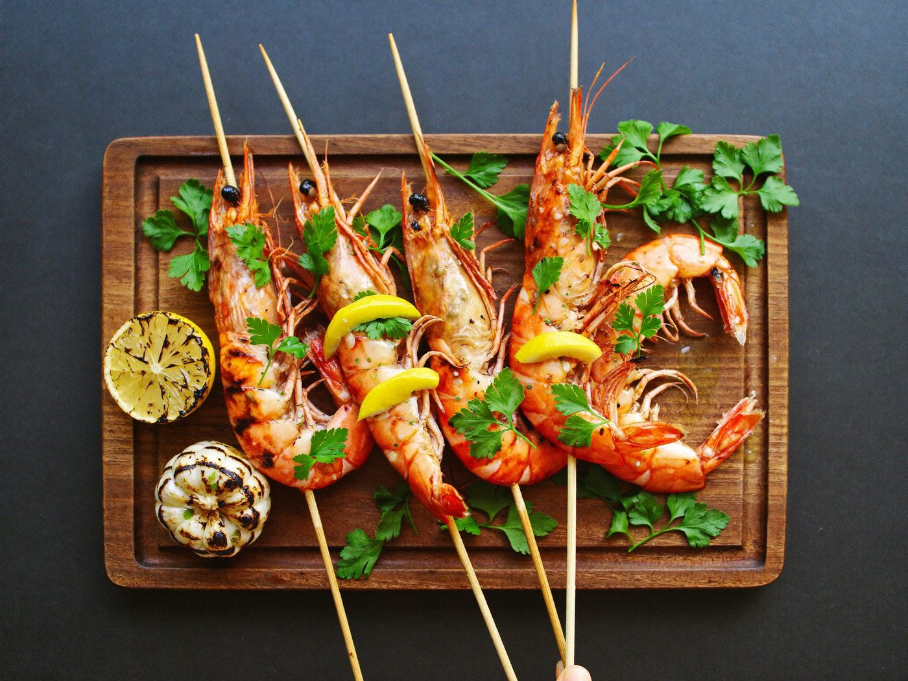
Garnelen vorbereiten
Kopf leicht nach unten klappen, den Rücken der Garnele durch die Schale hindurch einschneiden. Den dunklen Darmstreifen, falls sichtbar, vorsichtig herausziehen und entfernen.
Marinade ansetzen
Limettenschale und -saft, geriebenen Knoblauch, fein gehackte Chili, Rosmarinnadeln und Petersilie vermengen. Mit Salz und Olivenöl abschmecken, gut durchmengen.
Marinieren
Garnelen in der Marinade wenden, kurz durchziehen lassen.
Aufspießen
Garnelen quer aufspießen: den Spieß einmal nah am Schwanzende und einmal nah am Kopfende durch den gebogenen Körper stechen, sodass die Garnele ihre C-Form behält. Mehrere Garnelen pro Spieß — so bleiben sie auf dem Kohlerost beisammen, fallen nicht zwischen die Stäbe und lassen sich alle auf einmal wenden. Bei Holzspießen vorher mindestens 30 Min wässern.
Grillen
Spieße bei direkter Hitze auf den Holzkohlegrill legen.
Garprobe
Dickste Stelle im Auge behalten — sobald dort nur noch ein kleiner glasiger Punkt zu sehen ist, sofort wenden bzw. vom Grill nehmen. Etwa 3 Min pro Seite.
Fertigstellen
Mit frischem Limettensaft beträufeln.
Servieren
Kopf und Schale werden erst beim Essen abgepult. Wer mag, presst den Kopf separat aus und isst ihn mit optional.
Grillbibel · Rezept 017
Kein Vorgaren nötig: rohe Garnelen mit Zwiebel, Tomate und Knoblauch vermengt, in kleinen Pfannen direkt auf dem heißen Grill fertig — perfekte Vorspeise, während nebenbei die Steaks warten.
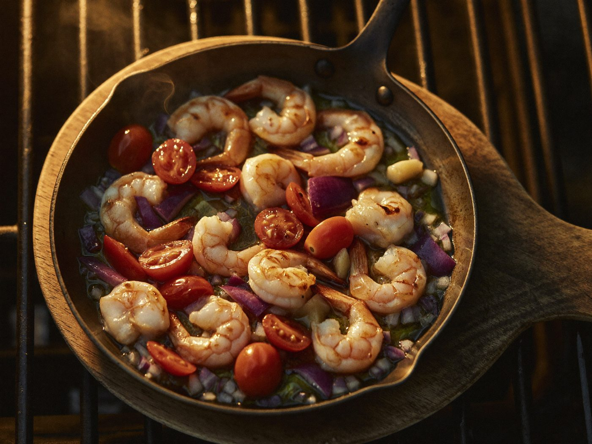
Garnelen auftauen
Falls tiefgekühlt, in kaltem Wasser oder über Nacht im Kühlschrank auftauen.
Grill vorheizen
Alle Brenner bis auf den hinteren auf volle Stufe stellen, Deckel schließen und ca. 20 Min auf ca. 300 °C vorheizen.
Knoblauch zerdrücken
Konfierten Knoblauch mit einer Gabel zerdrücken, bzw. frischen Knoblauch reiben oder pressen.
Zutaten vermengen
Garnelen, Zwiebelwürfel, Tomatenviertel, zerdrückten Knoblauch und Chiliflocken in einer Schüssel vermengen, großzügig salzen. Ca. 2 Min gut durchmischen, damit sich Salz und Knoblauch gleichmäßig verteilen.
Pfännchen befüllen
Mischung gleichmäßig auf die kleinen Pfannen verteilen.
Ölen
Olivenöl darübergeben — Abstand zum Rand lassen, damit beim Grillen nichts überschwappt.
Grillen
Pfännchen in die heißeste Zone des Grills stellen, Deckel schließen.
Garprobe
Nach ca. 8–10 Min sind die Garnelen undurchsichtig und rosa-weiß, die Mischung blubbert im Öl.
Servieren
Direkt aus der heißen Pfanne mit frischem Brot zum Dippen servieren.
Grillbibel · Rezept 018
Klassisch direkt gegrillt schlägt jede komplizierte Methode — mit ein paar Kniffen gegen das Aufplatzen und zwei hartnäckigen Mythen, die sich im Test nicht bestätigt haben.
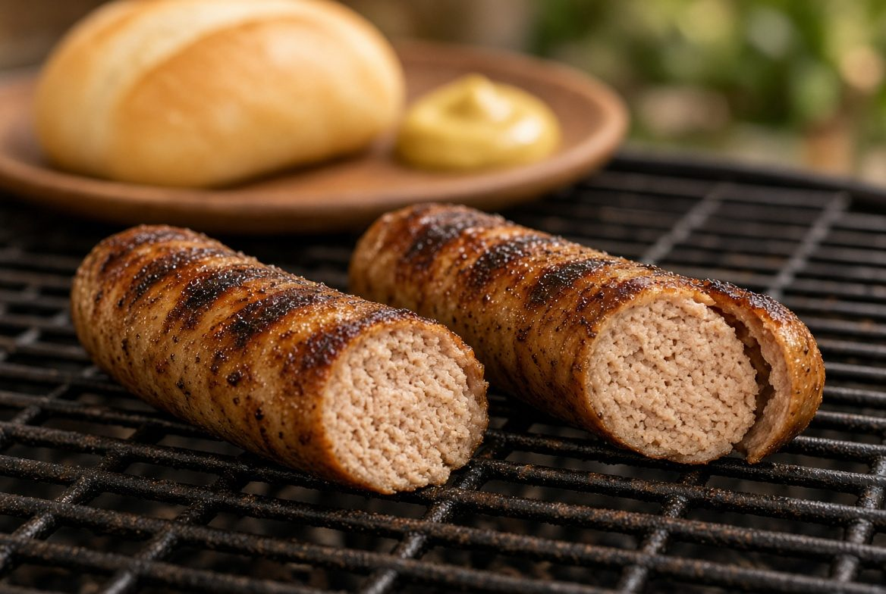
Einschneiden
optional Wer kontrollierte Risse statt zufälligem Aufplatzen möchte, schneidet die Wurst mehrfach quer zur Länge ein — bei gebogenen Würsten reicht es, nur die Innenseite einzuschneiden, das begradigt die Wurst gleichzeitig etwas und sorgt für gleichmäßigeren Kontakt zum Rost.
Grill vorheizen
Auf mittlere Hitze vorheizen, bei sehr starken Gasgrills reicht auch eine niedrigere Stufe — Bratwürste brauchen keine Volllast.
Einfetten
Rost oder Würste dünn mit Öl einreiben, damit nichts festklebt.
Auflegen
Würste leicht diagonal zu den Roststäben auflegen — ergibt ein schönes Branding, ist aber durch die gleichmäßige Strahlungshitze nicht entscheidend fürs Ergebnis.
Wenden — alle 1 Min
Regelmäßig wenden, bis alle Seiten gleichmäßig gebräunt sind.
Kerntemperatur prüfen
Fertig ab 75 °C im Kern.
Servieren
Direkt vom Grill servieren.
Grillbibel · Rezept 019
Vom Grill statt aus dem Ofen — in der Gusspfanne cremig gerührt und goldbraun überbacken. Perfekt, um den Kühlschrank nach Käseresten zu durchsuchen.
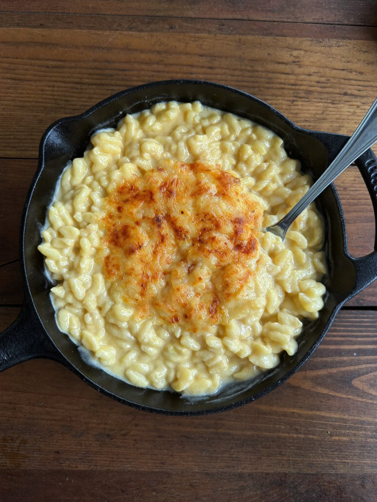
Zwiebel anschwitzen
Gusspfanne auf dem Grill erhitzen, Butter darin schmelzen. Zwiebelwürfel bei mittlerer Hitze goldbraun anschwitzen.
Käsesauce
Sahne dazugeben, die Hälfte des geriebenen Käses einrühren, bis er geschmolzen ist. Mit Salz, Pfeffer und Muskatnuss abschmecken — eine cremig-schlotzige Konsistenz ist das Ziel.
Nudeln unterheben
Vorgekochte Nudeln in die Käsesauce geben und gut durchschwenken.
Belegen
Restlichen Käse (und Mozzarella-Scheiben) gleichmäßig obenauf verteilen.
Überbacken
Pfanne auf dem vorgeheizten Grill auf die Ablage stellen, Deckel schließen, mit Ober-/Umluftfunktion goldbraun überbacken lassen.
Servieren
Direkt aus der heißen Pfanne servieren.
Grillbibel · Rezept 020
Kurz angegrillt für ein nussiges Röstaroma, dazu ein cremiges Balsamico-Honig-Dressing, das nicht ausflockt.
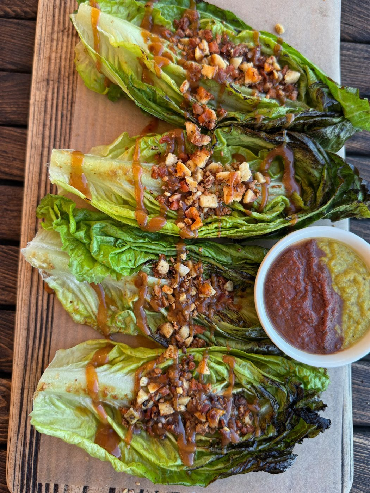
Dressing ansetzen
Senf, Honig, Balsamico-Essig, Salz und Pfeffer ohne Öl gründlich verrühren.
Emulgieren
Öl tröpfchenweise unter ständigem Rühren einarbeiten, bis eine cremig-sämige Konsistenz entsteht, die nicht mehr ausflockt.
Salatherzen vorbereiten
Salatherzen längs halbieren, dabei den Strunk dranlassen, damit die Blätter beim Grillen zusammenhalten.
Angrillen
Bei voller direkter Hitze 2–3 Min mit der Schnittfläche nach unten angrillen, bis ein nussiges Röstaroma entsteht.
Servieren
Mit dem Dressing beträufeln und servieren.
Grillbibel · Rezept 021
Denkbar einfach: kleine Kartoffeln in der Gusspfanne goldbraun gebraten, mit frischem Rosmarin erst zum Schluss.
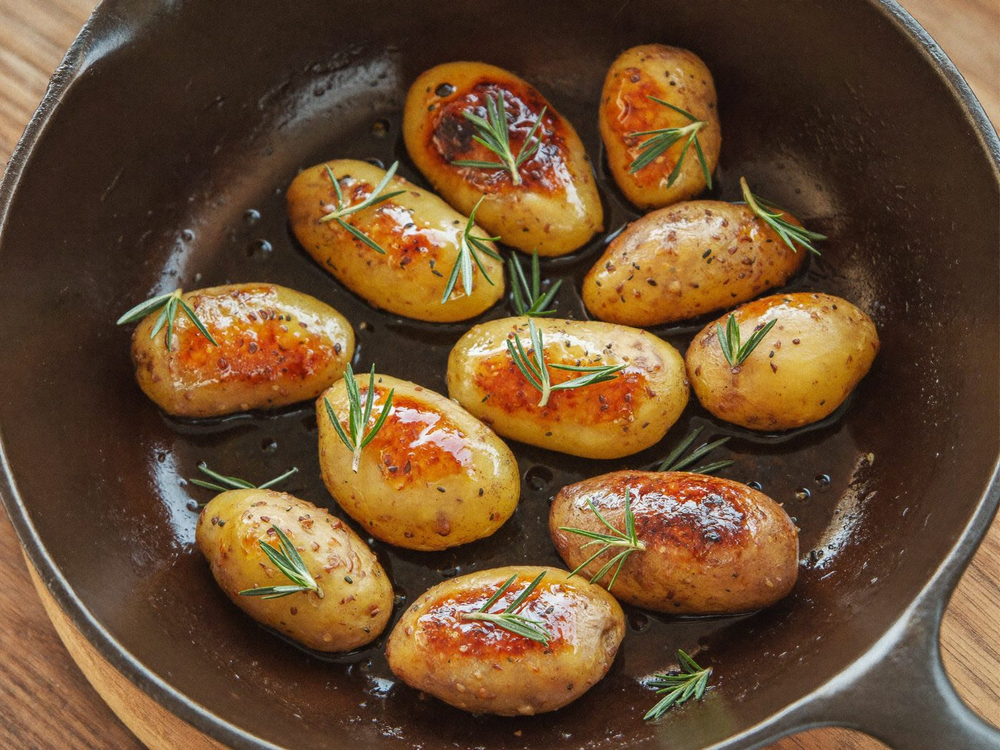
Pfanne vorheizen
Gusspfanne ca. 10 Min auf dem Grill vorheizen, einen Schuss Rapsöl hineingeben.
Kartoffeln anbraten
Kartoffeln mit der Schnittfläche nach unten bei mittlerer Hitze goldbraun braten, ca. 20–25 Min, gelegentlich wenden.
Rosmarin & Salz
Gegen Ende der Garzeit Rosmarinnadeln (vom Stiel gezupft) und Salz dazugeben, kurz mitbraten.
Servieren
Direkt aus der Pfanne servieren — sie hält die Hitze auch nach dem Herunternehmen noch lange.
Grillbibel · Rezept 022
In Butter geschwenkt, mit Knoblauch, frischen Kräutern und einem Schuss Ahornsirup zum Schluss — deutlich attraktiver als der Klassiker vom Kolben.
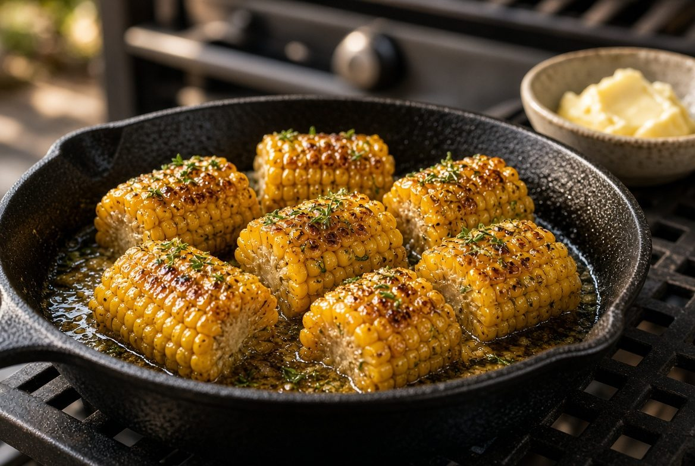
Anbraten
Butter in der vorgeheizten Gusspfanne auf dem Grill zergehen lassen, Maisstücke darin schwenken.
Röstaromen entwickeln — ca. 20 Min
Ohne Knoblauch und Kräuter bei mittlerer Hitze braten lassen, gelegentlich wenden, bis die Körner Farbe bekommen.
Würzen
Knoblauch, Kräuter und Ahornsirup dazugeben, weitere 5–10 Min mitbraten.
Servieren
Mit Salz abschmecken und servieren.
Grillbibel · Rezept 023
Die klassische Ofenkartoffel neu gedacht: Quark-Gemüse-Füllung statt Sour-Cream-Klecks, mit Parmesan überbacken.
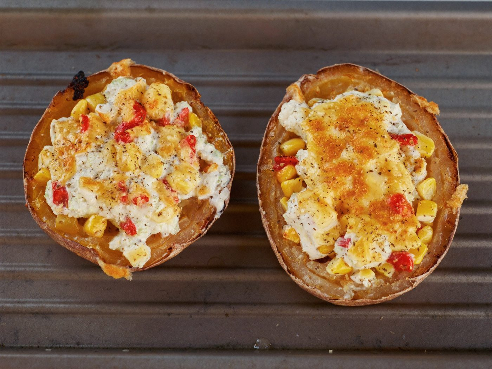
Kartoffeln vorbereiten
Backkartoffeln längs halbieren, auf ein Grillblech legen.
Aushöhlen
Fruchtfleisch mit einem Löffel aushöhlen, dabei muss nicht millimetergenau bis zur Schale gearbeitet werden.
Stampfen
Ausgehöhltes Fruchtfleisch mit Quark zu einem groben Kartoffelstampf verarbeiten.
Gemüse unterheben
Paprika, Mais, Frühlingszwiebel und Knoblauch dazugeben, mit Salz, Pfeffer und Muskatnuss würzen — nur unterheben, nicht mehr stampfen, damit die Struktur erhalten bleibt.
Füllen
Masse großzügig zurück in die Kartoffelschalen füllen, mit Parmesan bestreuen.
Überbacken
Auf dem Grillblech in die indirekte Zone bzw. auf die Ablage stellen, Deckel schließen und goldbraun überbacken.
Servieren
Heiß servieren.
Grillbibel · Rezept 024
Feta wird auf dem Grill butterweich, umgeben von Tomaten, Kräutern und Knoblauchöl — ein Selbstläufer als Vorspeise.
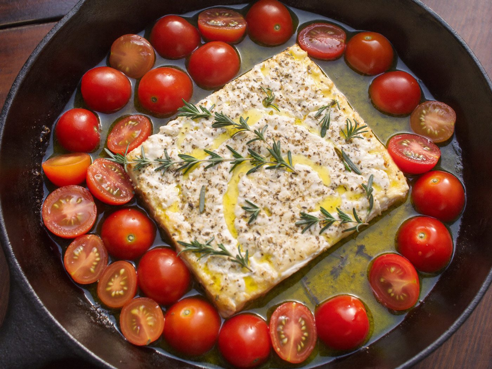
Vorbereiten
Olivenöl in die Gusspfanne geben, Feta hineinlegen, halbierte Tomaten drumherum verteilen.
Würzen
Thymian und Rosmarin darüber verteilen (Stiele vorher abziehen), mit Knoblauchöl beträufeln bzw. gehackten Knoblauch darübergeben. Mit Salz und Pfeffer würzen.
Grillen
Pfanne bei milder, indirekter Hitze auf den Grill stellen und langsam ziehen lassen, bis der Feta butterweich ist.
Servieren
Direkt aus der Pfanne servieren, z. B. mit Brot.
Grillbibel · Rezept 025
Ölfrei mariniert statt in Öl gegart — dadurch kein Qualmen und kein Anbrennen im Lochwok, dafür würziges Röstaroma auf allen Seiten.
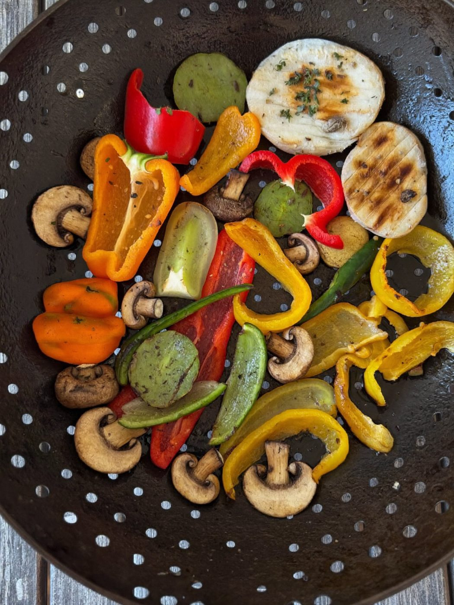
Gemüse schneiden
Zucchini und Aubergine nicht zu dünn schneiden, sonst werden sie beim Grillen matschig. Paprika etwas gröber würfeln.
Marinieren — 30–60 Min
Gemüse mit der Marinade vermengen und mindestens 30 Min, besser eine Stunde ziehen lassen.
Lochwok vorheizen
Lochwok auf dem Grill bei voller Hitze vorheizen.
Grillen — 20–25 Min
Gemüse ohne überschüssige Marinade in den Lochwok geben, gelegentlich wenden, bis es Röstaromen hat und weich, aber nicht matschig ist.
Servieren
Direkt servieren.
Grillbibel · Rezept 026
Der Knoblauch wird vorher als ganze Knolle geröstet, bevor er in die Kräuterbutter wandert — dadurch verliert er seine Schärfe und wird süßlich-mild.
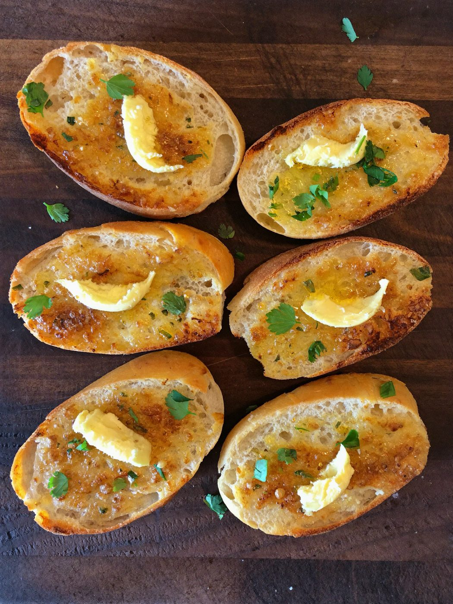
Knoblauch vorbereiten
Bei der Knoblauchknolle den Kopf so abschneiden, dass jede Zehe oben angeschnitten ist. Mit Olivenöl beträufeln, salzen und pfeffern.
Rösten — 45–60 Min
Knolle in Alufolie einwickeln und indirekt bei 180 °C auf den Grill legen, bis sie weich ist.
Kräuterbutter anrühren
Gerösteten Knoblauch aus der Schale drücken. Mit weicher Butter, gehackten Kräutern, Salz und Pfeffer zu einer Kräuterbutter verrühren — ruhig kräftig salzen, die Butter ist der Geschmacksträger.
Baguette vorbereiten
Baguette mittig aufschneiden, beide Schnittflächen großzügig mit der Kräuterbutter bestreichen.
Aufbacken — 10–15 Min
Plancha indirekt mit vorheizen. Baguette mit der Schnittseite nach unten auf die heiße Plancha legen, bis es aufgebacken und knusprig ist, dabei die Schnittseite im Blick behalten, damit sie nicht zu dunkel wird.
Servieren
Aufschneiden und servieren.
Grillbibel · Rezept 027
Vom Jahrmarkt bekannt, spiralförmig aufgeschnitten auf den Spieß — auf dem Grill genauso knusprig wie aus der Fritteuse, nur ohne Frittieren.
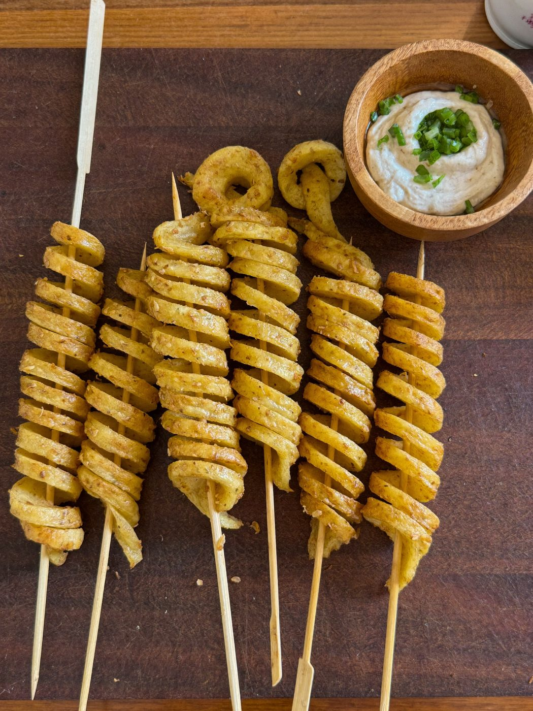
Aufspießen
Kartoffel mittig längs auf einen Holzspieß schieben.
Spiralförmig einschneiden
Mit dem Messer schräg spiralförmig um die Kartoffel herum schneiden, dabei immer bis zum Holzspieß durchschneiden. 3–5 mm dicke Streifen anstreben.
Auffächern
Die Kartoffel vorsichtig auseinanderziehen, sodass sich die Spirale ein wenig auffächert — genug, dass Öl, Gewürz und Hitze dazwischenkommen.
Würzen
In eine Auflaufform legen, mit Öl beträufeln, mit dem Rub bestäuben.
Grillen — 60–75 Min
Bei 180–200 °C auf den Grill (bei paprikahaltigem Rub nicht über 220 °C gehen). Zwischendurch mehrfach mit Öl bepinseln. Nach einer Stunde eine Kartoffel probieren.
Servieren
Vom Spieß servieren oder abziehen.
Grillbibel · Rezept 028
In Honig-Butter mit Knoblauch angeschwitzt, dann im Grill fertig gegart — schmeckt selbst Möhren-Skeptikern.
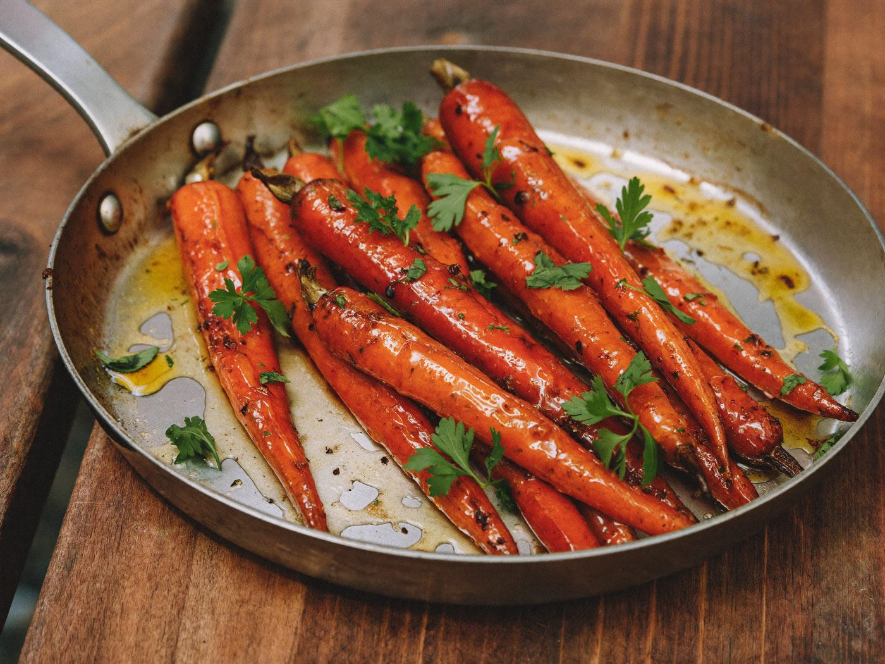
Butter schmelzen
Gusspfanne auf dem Seitenkocher auf niedrigster Stufe erhitzen, klein geschnittene Butter darin schmelzen, dabei rühren.
Honig & Knoblauch
Sobald die Butter geschmolzen ist, Honig einrühren, bis leichte Röstaromen und eine hellbraune Farbe entstehen. Knoblauch dazugeben und kurz mitrösten.
Möhren anschwenken
Möhren dazugeben und kurz darin schwenken, dabei die Butter im Blick behalten — wird sie zu dunkel, sofort von der Hitze nehmen.
Indirekt fertiggaren — 25 Min
Pfanne auf den Grill in die indirekte Zone stellen (äußere Brenner an, mittlere aus), bei 180 °C fertig garen.
Abschmecken
Mit Salz und Pfeffer abschmecken, vor dem Servieren noch einmal mit der Honig-Butter übergießen.
Servieren
Direkt aus der Pfanne servieren.
Grillbibel · Rezept 029
Feta mit Tomaten, Zwiebeln und Knoblauchöl im eigenen Pfännchen überbacken — als Vorspeise oder Beilage, ganz nach Belieben dosiert.
Knoblauchöl ansetzen
Olivenöl mit geriebenem Knoblauch verrühren, kurz ziehen lassen.
Pfännchen befüllen
Feta in die Pfanne geben, Zwiebeln und Tomaten dazugeben. Etwas zusätzlichen Feta darüber zerbröseln.
Würzen
Mit Salz und Pfeffer würzen, Knoblauchöl darübergeben, zum Schluss mit Oregano bestreuen.
Grillen — ca. 20 Min
Bei 180 °C indirekter Hitze grillen, bis der Käse leicht braun anläuft.
Servieren
Direkt aus der heißen Pfanne servieren, z. B. mit Brot.
Grillbibel · Rezept 030
Geröstetes Brot, cremige Burrata, geschmorte Tomaten und ein paar Tropfen Balsamico — schnell gemacht, sieht aber nach mehr aus.
Tomaten vorbereiten
Tomaten halbieren, in eine Grillschale geben, mit Knoblauchöl beträufeln, salzen und pfeffern.
Tomaten grillen — 20 Min
Bei 180–200 °C Deckeltemperatur indirekt grillen.
Brot rösten
Brot von beiden Seiten mit Butter, Butterschmalz oder Knoblauchöl einreiben. Bei niedriger, direkter Hitze kurz von jeder Seite rösten, bis die gewünschten Röstaromen da sind.
Belegen
Burrata anschneiden und auf dem gerösteten Brot verteilen.
Tomaten daraufgeben
Gegrillte Tomaten mit etwas vom Knoblauchöl darauf verteilen. Vorher probieren und bei Bedarf noch mit Salz und Pfeffer nachwürzen.
Fertigstellen
Mit frischem Basilikum bestreuen, zum Schluss ein paar Tropfen Balsamico-Essig darübergeben.
Servieren
Sofort servieren.
Grillbibel · Rezept 031
Mariniertes Fetawürfelchen in hauchdünne Zucchinistreifen eingerollt und kurz angebraten — kleine Häppchen mit großem Geschmack.
Zucchini hobeln
Zucchini mit dem Sparschäler in dünne Längsstreifen hobeln, zwischen Küchenpapier legen und ca. 10 Min Flüssigkeit ziehen lassen.
Feta marinieren
Fetawürfel mit der Marinade vermengen, mindestens 10 Min ziehen lassen.
Einrollen
Je einen Fetawürfel in einen Zucchinistreifen einrollen und auf die Spieße stecken.
Anbraten
Kurz vor dem Grillen etwas Olivenöl über die Spieße geben. Auf der heißen Plancha von allen Seiten anbraten, bis die Zucchini Röstaromen hat — geht schnell.
Servieren
Sofort servieren.
Grillbibel · Rezept 032
Cornbread im Dutch-Oven-Deckel gebacken — außen eine schöne braune Kruste, innen saftig. Ohne Gehzeit, dank Backpulver ruckzuck fertig.
Teig ansetzen
Eier in eine Schüssel geben, kurz verquirlen. Zucker und weiche Butter dazugeben, glattrühren, möglichst klumpenfrei.
Flüssigkeit & Backpulver
Milch unterrühren, dann Backpulver und Zitronensaft dazugeben.
Mehl einarbeiten
Mehl langsam unterrühren, am besten von Hand — nicht überkneten, es soll sich nur verbinden.
Maismehl unterrühren
Maismehl dazugeben und verrühren. Der Teig bleibt flüssig, ähnlich einem Rührteig.
Grill vorheizen
Gasgrill auf ca. 200 °C vorheizen, dafür die äußeren Brenner an, die mittleren aus lassen.
Backform vorbereiten
Dutch-Oven-Deckel großzügig bis zum Rand einfetten, Teig einfüllen.
Backen — 20–25 Min
In die indirekte Zone stellen, Deckel schließen.
Garprobe
Mit einem Holzspieß einstechen — bleibt nichts kleben, ist das Brot fertig.
Ruhen & servieren
Ein paar Minuten stehen lassen (der Guss ist noch sehr heiß), dann in Stücke schneiden und servieren.
Grillbibel · Rezept 033
Ganz ohne Grill, in 5 Minuten püriert — fruchtig-scharfe Dip-Sauce, die zu praktisch allem Gegrillten passt.
Mango vorbereiten
Mango schälen, Fruchtfleisch vom Kern lösen.
Zutaten zusammengeben
Mango, Mayonnaise, Knoblauchzehen, gehackte Chili, Senf, Currypulver, Salz und Pfeffer in ein hohes Gefäß geben.
Pürieren
Mit dem Pürierstab fein pürieren, bis keine Stücke mehr zu sehen sind.
Abschmecken
Probieren und bei Bedarf mit Currypulver, Salz oder Pfeffer nachjustieren.
Abfüllen
In saubere, ausgekochte Flaschen füllen und kühl aufbewahren.
Servieren
Passt zu praktisch allem Gegrillten — besonders gut zu Nackensteaks, Bratwurst, Pommes, Salzkartoffeln und Sandwiches.
Grillbibel · Rezept 034
Lang eingekocht mit Bourbon, Melasse und knusprigem Bacon — eine dickflüssige, rauchig-süße Sauce mit ordentlich Tiefe.
Bacon anbraten
Butterschmalz im Topf erhitzen, Bacon darin knusprig anbraten. Herausnehmen und auf Küchenpapier abtropfen lassen, das Bratfett im Topf lassen.
Zwiebel & Knoblauch
Zwiebel und Knoblauch im Bratfett andünsten, bis sie leicht bräunlich werden.
Ablöschen
Mit Bourbon ablöschen, kurz einreduzieren lassen.
Ketchup & Würze
Ketchup dazugeben, kurz aufkochen lassen. Apfelessig, Zuckerrohrmelasse, Senf, Chiliflocken und Salz einrühren.
Einkochen — 1,5–2 Std
Hitze reduzieren, offen bei niedriger Temperatur köcheln lassen, bis die Sauce dickflüssig eingekocht ist. Gelegentlich umrühren.
Bacon zurückgeben
Bacon wieder dazugeben, unterrühren und weitere 10 Min bei niedrigster Temperatur köcheln lassen.
Abfüllen
Heiß in saubere Flaschen oder Gläser abfüllen.
Servieren
Passt zu allem vom Grill, besonders zu Rind und Schwein.
Grillbibel · Rezept 035
Drei Käsesorten, knackiges Gemüse und ein cremiges Joghurt-Dressing — die perfekte kühle Beilage ohne Grill.
Dressing anrühren
Salatmayonnaise, Joghurt und Schmand mit Salz, Pfeffer und Paprikapulver glattrühren, bis eine cremige Marinade entsteht. Beiseitestellen.
Paprika vorbereiten
Paprika oben und unten kappen, Kerngehäuse entfernen, in Streifen und dann in feine Würfel schneiden. Zum Dressing geben.
Mais dazugeben
Mais gut abtropfen lassen und komplett mit in die Schüssel geben.
Gurke vorbereiten
Gurke schälen, längs halbieren und mit einem Löffel das Kerngehäuse herauskratzen, damit der Salat nicht wässrig wird. Anschließend in feine Würfel schneiden und dazugeben.
Käse würfeln
Alle drei Käsesorten in feine, mundgerechte Würfel schneiden.
Vermengen
Käse und Gemüse mit dem Dressing gründlich vermischen. Wer mag, hebt jetzt die fein gewürfelte rote Zwiebel unter.
Abschmecken & servieren
Final mit Salz, Pfeffer und Paprikapulver abschmecken und kühl zum Grillgut servieren.
Grillbibel · Rezept 036
Entwässerte Gurken, ein würziges BBQ-Dressing und frischer Dill — eine intensive, nie wässrige Beilage zum Grillgut.
Gurken & Zwiebel vorbereiten
Gurken in dünne Scheiben hobeln (mit oder ohne Schale, nach Belieben) und mit der fein gewürfelten roten Zwiebel in eine Schüssel geben.
Entwässern
Zucker und Salz im Verhältnis 2:1 darüberstreuen. Mit den Händen vorsichtig einarbeiten, ohne zu drücken oder zu kneten, bis alle Scheiben benetzt sind.
Ziehen lassen — 20–30 Min
Die Schüssel schräg stellen oder das Gemüse auf Küchenpapier geben, damit die austretende Flüssigkeit ablaufen kann.
Flüssigkeit entfernen
Nach der Ziehzeit die Gurken und Zwiebeln leicht ausdrücken und in eine saubere Schüssel geben.
Dressing hinzufügen
Chiliflocken, Olivenöl, Kräuteressig, Agavendicksaft, Pfeffer und BBQ-Sauce dazugeben und gut vermengen.
Dill unterheben
Den gehackten Dill vorsichtig unterheben, damit er nicht zerdrückt wird.
Durchziehen & servieren
Nochmals 15–20 Min durchziehen lassen, final abschmecken und kühl servieren.
Grillbibel · Rezept 037
Selbstgemachte Mayonnaise, aufgefrischt mit Zitrone, Quark und frischen Kräutern — leicht und cremig zugleich.
Mayo-Basis ansetzen
Öl, Essig, Senf, Salz und Pfeffer in das hohe Gefäß geben. Das Ei vorsichtig obenauf gleiten lassen, ohne es zu verrühren.
Emulgieren
Pürierstab bis auf den Boden absenken, sodass das Ei bedeckt ist. Einschalten und langsam nach oben ziehen, bis eine cremige Mayonnaise entsteht.
Verfeinern
Zitronensaft, Quark, Petersilie und Schnittlauch unterrühren.
Abschmecken
Nach Geschmack nachwürzen und kühl stellen.
Grillbibel · Rezept 038
Karamellisierte Zwiebeln, Tomatenmark und ein Schuss Cognac — eine klassische, sämige Grillsoße zum Selberkochen.
Zwiebel & Knoblauch andünsten
Olivenöl im Topf erhitzen, Zwiebel und Knoblauch darin gut andünsten.
Karamellisieren
Zucker einstreuen und leicht karamellisieren lassen. Tomatenmark einrühren, kurz mit anschwitzen.
Ablöschen & köcheln
Passata dazugeben, verrühren und ca. 10 Min köcheln lassen.
Würzen
Senf, Essig, Cognac und Worcestershiresauce einrühren. Mit Salz, Pfeffer und Paprikapulver abschmecken.
Einkochen
Bei niedriger Hitze weiter köcheln lassen, bis die Soße leicht eingedickt ist.
Abkühlen & servieren
Etwas abkühlen lassen und in eine Schüssel füllen, unpüriert servieren.
Grillbibel · Rezept 039
Grobkörniger Senf, flüssiger Honig und frische Kräuter — in fünf Minuten angerührt, mit ordentlich Kick.
Basis anrühren
Senf, Honig und Olivenöl in einer Schüssel glatt verrühren.
Kräuter einarbeiten
Thymian, Rosmarin und Knoblauch sehr fein hacken und unterrühren.
Abschmecken
Mit Salz und Pfeffer würzen, zwischendurch probieren.
Grillbibel · Rezept 040
Frischkäse und Crème fraîche mit einem Spritzer Ketchup und Cognac — leicht säuerlich und schnell gemacht.
Basis verrühren
Frischkäse und Crème fraîche glatt verrühren.
Verfeinern
Ketchup und Cognac vorsichtig unterrühren.
Abschmecken
Mit Salz und Pfeffer würzen und kühl stellen.
Grillbibel · Rezept 041
Naturjoghurt, saure Sahne und eine große Portion frischer Kräuter — erfrischend leicht zu jedem Grillgut.
Basis verrühren
Naturjoghurt, saure Sahne und Mayonnaise in einer Schüssel glattrühren.
Kräuter unterrühren
Frisch gehackten Rosmarin und Thymian sowie weitere Kräuter nach Wahl einrühren.
Abschmecken
Mit grobem Meersalz abschmecken.
Grillbibel · Rezept 042
Eingekochter Orangensaft trifft auf zwei Senfsorten und Marmelade — eine fruchtig-würzige, komplett pflanzliche Soße.
Orangensaft reduzieren
Orangensaft in einem breiten Topf auf ca. 20–30% der Ausgangsmenge einkochen lassen.
Abkühlen lassen
Die Reduktion vollständig abkühlen lassen, sonst wird die Mayonnaise in der Sauce zu dünn.
Basis verrühren
Vegane Mayonnaise, Orangenmarmelade und beide Senfsorten glatt verrühren.
Reduktion einrühren
4 EL der abgekühlten Orangensaft-Reduktion unterrühren.
Abschmecken
Mit Salz und Pfeffer abschmecken.
Grillbibel · Rezept 043
Vegane Mayonnaise, Ketchup und geräuchertes Paprikapulver — der klassische Cocktail-Sauce-Geschmack, komplett pflanzlich.
Basis verrühren
Vegane Mayonnaise und Ketchup glatt verrühren.
Würzen
Worcestershiresauce, Pfeffer und optional Cognac unterrühren.
Rauchnote
Geräuchertes Paprikapulver einrühren, für den rauchigen Geschmack.
Abschmecken & kühlen
Bei Bedarf mit etwas mehr Mayonnaise andicken. Kalt stellen, damit die Soße fester wird.
Grillbibel · Rezept 044
Cremig durch vegane Frischkäse- und Sahne-Alternativen, fruchtig durch frische Ananas — mild-süß mit Currywürze.
Basis würzen
Vegane Frischkäse-Alternative in eine Schüssel geben. Currypulver, Ingwer, Hefeflocken und Chilipulver unterrühren.
Sahne einrühren
Vegane Schlagsahne-Alternative unterrühren, bis eine cremige, fluffige Masse entsteht.
Ananas unterheben
Frische Ananaswürfel vorsichtig unterheben.
Abschmecken
Mit Salz und einem Schuss weißem Balsamico-Essig abschmecken.
Grillbibel · Rezept 045
Salzkartoffeln in würzigem BBQ-Dressing, grüne Bohnen, rote Zwiebelringe und ordentlich knuspriger Bacon obenauf.
Dressing anrühren
Mayonnaise, Worcestershiresauce, BBQ-Sauce, Milch und Balsamico-Essig verrühren. Mit Paprikapulver, Chiliflocken, Salz, Pfeffer und Kreuzkümmel würzen, glattrühren und probieren.
Kartoffeln marinieren
Dressing über die noch warmen Kartoffelwürfel geben und vorsichtig unterheben, bis alles bedeckt ist.
Durchziehen lassen — mind. 1 Std
Zugedeckt im Kühlschrank ziehen lassen, über Nacht wird der Salat noch besser.
Zwiebel vorbereiten
Rote Zwiebel in feine Ringe hobeln.
Bacon anbraten
Bacon in einer Pfanne mit wenig Öl knusprig auslassen. Mit einem Schuss Bier ablöschen und kurz aufkochen lassen, dann auf Küchenpapier abtropfen lassen.
Anrichten
Grüne Bohnen und Zwiebelringe auf dem Kartoffelsalat verteilen, zum Schluss den knusprigen Bacon darüberstreuen.
Grillbibel · Rezept 046
Krosses Hackfleisch, Cheddar, Essiggurken und ein Big-Mac-inspiriertes Dressing — der Kartoffelsalat für Burger-Fans.
Hackfleisch anbraten
Hackfleisch in einer heißen Pfanne mit etwas Öl krümelig anbraten, bis es Farbe bekommt. Mit Salz und Pfeffer würzen, leicht abkühlen lassen.
Dressing anrühren
Mayonnaise mit Weinessig, Senf, Knoblauchpulver, Zwiebelpulver, Paprikapulver und Relish verrühren, mit Salz und Pfeffer abschmecken.
Hackfleisch unterheben
Das noch warme Hackfleisch zu den Kartoffeln geben und vorsichtig vermengen.
Weitere Zutaten dazugeben
Essiggurken, Eisbergsalat, Röstzwiebeln und Cheddar dazugeben und alles vermengen.
Dressing unterheben
Dressing unterheben. Falls zu fest, mit einem Schuss Milch etwas verdünnen.
Durchziehen lassen
Mindestens 1 Std im Kühlschrank durchziehen lassen.
Servieren
Vor dem Servieren mit gewürfelten Tomaten toppen.
Grillbibel · Rezept 047
Krosses Hackfleisch, Kidneybohnen, Mais und ein cremiges Avocado-Dressing — mit Tortilla-Chips für den Crunch.
Hackfleisch anbraten
Hackfleisch in einer heißen Pfanne krümelig anbraten, mit Salz und Pfeffer würzen. Beiseitestellen und etwas abkühlen lassen.
Avocado-Dressing
Avocado, Petersilie, Olivenöl, Zitronensaft, Knoblauch, Salz, Ancho-Chiliflocken und Pfeffer im Mixer fein pürieren. Bei Bedarf mit etwas Wasser die gewünschte, gießfähige Konsistenz einstellen.
Gemüse schneiden
Paprika, Jalapeños, rote Zwiebel und Tomaten klein schneiden.
Salat zusammenstellen
Hackfleisch, geschnittenes Gemüse, Kidneybohnen und Mais in einer großen Schüssel vermengen. Romana-Salat unterheben.
Dressing unterheben
Avocado-Dressing darübergeben und alles gut vermengen.
Servieren
Tortilla-Chips erst kurz vor dem Servieren untermischen, damit sie knusprig bleiben.
Grillbibel · Rezept 048
Dunkles Bier und ein Schuss Cola geben dieser Tomaten-Sauce Tiefe — abgerundet mit Honig, Limette und einem Spritzer Tabasco.
Zwiebel andünsten
Öl im Topf erhitzen, die gewürfelte Zwiebel darin glasig dünsten.
Ablöschen
Mit Bier und Cola ablöschen und kurz aufkochen lassen.
Sauce ansetzen
Tomatenmark, Ketchup und Honig einrühren. Mit Salz, Pfeffer und Paprikapulver würzen.
Einkochen
Bei mittlerer Hitze köcheln lassen, bis die Sauce eindickt, dabei gelegentlich umrühren.
Abrunden
Tabascosauce und Limettensaft einrühren, abschmecken.
Servieren
Mit etwas Petersilie garnieren und warm oder kalt zum Grillgut servieren.
Grillbibel · Rezept 049
Kartoffeln, jede Menge Eier, Fleischwurst und knuspriger Speck in cremiger Mayonnaise — der klassische, herzhafte Berliner Kartoffelsalat.
Speck auslassen
Speckstreifen in eine kalte Pfanne geben und langsam auslassen, bis das Fett austritt und der Speck leicht Farbe bekommt.
Zwiebeln andünsten
Zwiebeln im Speckfett glasig dünsten. Pfanne vom Herd nehmen und abkühlen lassen.
Basis anrühren
Mayonnaise, Gewürzgurken und einen Schuss Gurkenwasser in einer großen Schüssel verrühren.
Wurst & Eier
Fleischwurst würfeln und untermengen. Eier grob zerkleinern und unterheben.
Würzen
Senf, Paprikapulver, Kräutermischung, Pfeffer und Salz einrühren.
Kartoffeln unterheben
Kartoffelscheiben dazugeben.
Speck-Zwiebel-Mischung
Die abgekühlte Speck-Zwiebel-Mischung samt Fett unterheben, alles vorsichtig, aber gründlich vermengen.
Servieren
Mit Schnittlauch, Eierspalten und einer Gewürzgurke garnieren.
Grillbibel · Rezept 050
Ajvar, Mayonnaise und Crème fraîche machen aus kleinen Nudeln, Paprika und Mais einen würzig-cremigen Nudelsalat mit Kick.
Nudeln kochen
Nudeln nach Packungsanweisung kochen, abgießen und leicht abkühlen lassen.
Gemüse untermengen
Mais, Frühlingszwiebeln und Paprika zu den Nudeln geben und leicht vermengen.
Dressing anrühren
Ajvar, Mayonnaise und Crème fraîche verrühren, etwas Olivenöl und die gehackte Petersilie unterrühren.
Vermengen
Dressing über den Nudelsalat geben und gründlich vermengen.
Würzen
Mit Gemüsebrühe-Gewürzmischung und Knoblauchpulver würzen, erneut vermengen.
Durchziehen lassen — mind. 2 Std
Kühl durchziehen lassen, dann final mit Salz abschmecken.
Grillbibel · Rezept 051
Ein klassischer, schnell gemachter Bohnensalat mit Essig-Zwiebel-Marinade — die frische, säuerliche Beilage zu deftigem Grillgut.
Marinade ansetzen
Zwiebeln fein würfeln und in eine Schüssel geben. Kräuteressig, Salz, Pfeffer und Sojasauce dazugeben und gut verrühren.
Kidneybohnen unterheben
Kidneybohnen vorsichtig unterheben.
Schnittbohnen dazugeben
Schnittbohnen dazugeben und behutsam unterheben, damit sie nicht zerdrückt werden.
Verfeinern
Nach Wunsch etwas Öl unterrühren, für eine leichtere Variante kann es weggelassen werden.
Durchziehen & servieren
Mindestens 1 Std ziehen lassen, dann servieren.
Grillbibel · Rezept 052
Cannelloni-Nudeln, gefüllt mit würzigem Hackfleisch und Cheddar, in Bacon gewickelt — deftiges Fingerfood direkt vom Grill.
Füllung anmachen
Hackfleisch mit BBQ-Rub gut vermengen. Cheddar und fein gehackte Jalapeños untermischen. Etwas BBQ-Sauce unterrühren, damit die Masse saftig bleibt.
Nudeln füllen
Die rohen Cannelloni-Nudeln locker und ohne Druck mit der Hackfleischmasse befüllen, bis beide Enden komplett gefüllt sind.
In Bacon wickeln
Jede Nudel je nach Speckdicke mit ein oder zwei Lagen Bacon umwickeln, die Enden gut verschließen.
Grillen
Bei 160°C indirekter Hitze auf den Grill legen.
Glasieren
Nach den ersten Minuten mit der BBQ-Glasur bepinseln, besonders an Stellen ohne Bacon.
Garen — bis 75°C Kerntemperatur
Ca. 60–75 Min garen, dabei gelegentlich nachglasieren, bis die Nudel innen gar und der Bacon knusprig ist.
Grillbibel · Rezept 053
Hackfleischbällchen mit einem Käsekern, komplett in Bacon eingewickelt — saftiges Fingerfood mit Käseüberraschung.
Hackfleisch würzen
Hackfleisch mit BBQ-Rub gut vermengen.
Käse einarbeiten
Handballgroße Portionen abwiegen, platt drücken. Ein kleines, festgedrücktes Cheddar-Kügelchen in die Mitte legen und das Hackfleisch komplett darum verschließen.
In Bacon wickeln
Zwei Streifen Bacon kreuzweise auslegen, den Ball in die Mitte setzen und den Bacon unter leichter Spannung darum wickeln.
Grillen
Bei 160°C indirekter Hitze auf den Grill legen.
Glasieren
Nach ca. 20 Minuten mit BBQ-Sauce glasieren.
Garen — mind. 63°C Kerntemperatur
Ca. 45–60 Min garen, bis der Bacon knusprig und die Kerntemperatur erreicht ist.
Grillbibel · Rezept 054
Brie oder Camembert wird auf dem Grill cremig-warm und bekommt mit Knoblauch, Honig und Chili den perfekten Dip-Charakter.
Käse vorbereiten
Käse in eine kleine gusseiserne Pfanne oder Form legen. Die Oberseite in ca. 1 cm große Quadrate einritzen.
Belegen
Knoblauch darüber verteilen, mit Honig beträufeln und mit Chiliflocken oder BBQ-Rub bestreuen.
Grillen
Bei 160°C indirekter Hitze ca. 20–30 Min grillen, bis der Käse innen weich und cremig ist.
Servieren
Mit Tortilla-Chips oder Brot zum Dippen servieren.
Grillbibel · Rezept 055
Aufgeklappte Hähnchenkeulen, innen gewürzt und außen glasiert — so wird auch günstiges Hähnchen schön saftig und knusprig.
Keulen aufschneiden
Auf der Rückseite (nicht der Hautseite) längs bis zum Knochen einschneiden, Haut und Fleisch dabei durchtrennen. Am Knochen entlang das Fleisch ablösen und die Keule wie ein Buch aufklappen.
Würzen
Von der Fleischseite mit BBQ-Rub würzen und leicht einreiben. Von der Hautseite die Haut etwas anheben und auch darunter würzen, dann wieder glattstreichen und mit Salz bestäuben.
Grillen
Mit der Hautseite nach unten bei 160°C indirekter Hitze auf den Grill legen.
Wenden & glasieren
Gegen Ende wenden und die Hautseite mit BBQ-Sauce glasieren.
Garen — bis 75–80°C Kerntemperatur
Insgesamt ca. 45–60 Min garen, bis die Kerntemperatur erreicht und die Haut leicht knusprig ist.
Grillbibel · Rezept 056
Kräftige Grillwurst, in knusprigen Blätterteig gewickelt und direkt auf dem Grill gebacken — einfaches Fingerfood mit großem Effekt.
Blätterteig vorbereiten
Blätterteig ausrollen und in ca. zwei Finger breite Streifen schneiden.
Wurst vorbereiten
Falls die Wurst noch keine Käsefüllung hat, längs einschneiden und mit Käse füllen.
Einwickeln
Jede Wurst leicht schräg in einen Blätterteigstreifen einwickeln.
Grillen
Bei 160°C indirekter Hitze auf den Grill legen und garen, bis der Blätterteig goldbraun und knusprig ist (ca. 25–35 Min).
Grillbibel · Rezept 057
Würziges Hackfleisch mit Jalapeños und Käse, in Bacon gerollt und mit BBQ-Sauce glasiert — schnelles, würziges Fingerfood vom Gasgrill.
Hackfleisch würzen
Jalapeños sehr fein hacken, fast zu einer Paste, und mit ins Hackfleisch geben. Gewürzmischung dazugeben und alles gut vermengen. Hackfleisch in 4 gleiche Portionen teilen.
Rollen vorbereiten
Baconscheiben nebeneinander auslegen, etwas breiter als der Käse. Eine Hackfleisch-Portion darauf verteilen, einen Käsestreifen daraufgelegt.
Einrollen
Alles zu einer Rolle einrollen und die Enden gut zudrücken, damit möglichst wenig Käse ausläuft. Für die restlichen Portionen wiederholen.
Grillen
Bei 170°C indirekter Hitze auf den Grill legen, bis der Bacon außen knusprig und innen alles gar ist.
Glasieren
Mit BBQ-Sauce bepinseln und weitere ca. 10 Min grillen.
Servieren
Anschneiden und servieren.
Grillbibel · Rezept 058
Ein dickes Rib-Eye mit kurzem Knochen, direkt über glühender Kohle gegrillt — ganz ohne Deckel, ganz ohne Angst vor der offenen Flamme.
Garstufen — Kerntemperatur beim Herausnehmen
| Garstufe | Kerntemperatur |
|---|---|
| Rare (blutig) | 45–50 °C |
| Medium Rare Standard hier | 52–55 °C |
| Medium | 57–60 °C |
| Medium Well | 62–65 °C |
| Durch (Well Done) | 68 °C+ |
Vorbereiten
Steak vor dem Grillen ca. 30–60 Min Zimmertemperatur annehmen lassen. Mit etwas Öl einreiben und von beiden Seiten mit Salz und Pfeffer würzen.
Kohle vorbereiten
Kohlen richtig heiß durchglühen lassen, notfalls mit einem Gasbrenner nachhelfen, bis eine gleichmäßige Glut entstanden ist.
Direkt grillen
Steak ohne Deckel direkt über die glühenden Kohlen legen und mehrfach wenden, bis sich eine schöne Kruste gebildet hat.
Kerntemperatur prüfen
Bis zur gewünschten Garstufe grillen (siehe Tabelle oben), dabei die Kerntemperatur regelmäßig mit dem Thermometer kontrollieren.
Ruhen lassen — mind. 10 Min
Vom Grill nehmen und ohne Deckel oder Folie ruhen lassen, damit sich die Temperatur im Fleisch ausgleicht und der Anschnitt gleichmäßiger wird.
Anschneiden & servieren
Gegen die Faser in Scheiben schneiden und servieren.
Grillbibel · Rezept 059
Lachs, auf ein Brett geschraubt und schräg neben ein kleines Buchenholzfeuer gestellt — langsam durchgezogen statt gegrillt, fast wie leicht geräucherter Graved Lachs.
Würzen & ziehen lassen — 1 Std
Lachs beidseitig mit Salz und der groben Pfeffermischung würzen, gut andrücken und ca. 1 Std durchziehen lassen.
Brett vorbereiten
Flammlachsbrett und Halterung mit Öl einreiben, damit später nichts festklebt.
Lachs befestigen
Lachs auflegen, mit dem Messer kleine Schnitte durch die Haut an den Stellen der Halterung setzen. Halterung von hinten locker festschrauben — nur so fest, dass der Fisch nicht herunterfällt, aber nicht gequetscht wird.
Feuer entfachen
Kleines Feuer in der Feuerschale oder im offenen Kugelgrill entfachen. Brett schräg an der Seite aufstellen, sodass die Hitze gleichmäßig von unten nach oben strahlt.
Langsam garen — bis zu 1,5 Std
Alle 20 Minuten ein Stück Holz nachlegen, damit ein kleines, gleichmäßiges Feuer erhalten bleibt. Neigung und Position des Bretts bei Bedarf anpassen.
Kerntemperatur prüfen
Bei ca. 62–65 °C Kerntemperatur ist der Lachs perfekt — schön saftig, fast wie Graved Lachs.
Vom Brett lösen & servieren
Brett von der Feuerstelle nehmen, Halterung lösen und den Lachs vorsichtig vom Brett heben. In Stücke schneiden und servieren.
Grillbibel · Rezept 060
Dünne Kartoffelscheiben und Bacon im Wechsel aufgespießt, erst direkt angegrillt und dann auf der Plancha fertiggegart — außen knusprig, innen cremig.
Kartoffeln vorbereiten
Kartoffeln in gleichmäßig dünne Scheiben (ca. 3 mm) schneiden, Endstücke weglassen.
Bacon vorbereiten
Bacon in ähnlich große Würfel schneiden wie die Kartoffelscheiben.
Marinieren
Kartoffelscheiben mit etwas Olivenöl und dem Steak-Rub vermengen.
Aufspießen
Abwechselnd Kartoffel und Bacon auf die Spieße stecken.
Direkt angrillen
Spieße im direkten Bereich auf dem Ablagerost grillen, bis der Bacon weich wird und Fett abtropft.
Auf der Plancha fertiggaren
Spieße in den indirekten Bereich auf die Plancha legen und fertiggaren, bis die Kartoffeln weich sind (insgesamt ca. 45 Min).
Grillbibel · Rezept 061
Bacon, um einen Spieß gewickelt und in einer BBQ-Ahornsirup-Glasur gewendet — der selbstgemachte Ersatz für die Grillfackel aus dem Supermarkt.
Glasur anrühren
BBQ-Sauce und Ahornsirup in einer Schüssel vermengen.
Bacon glasieren
Je 2 Baconscheiben überlappend anordnen und in der Glasur wenden, bis sie dünn benetzt sind.
Aufwickeln
Bacon spiralförmig um einen Holzspieß wickeln, dabei stramm ziehen und leicht überlappen lassen.
Würzen
Fertige Fackeln mit dem Steak-Rub bestreuen.
Grillen
Grill kurz ausschalten, Rost einfetten, wieder einschalten. Fackeln bei mittlerer Temperatur direkt grillen, bis der Bacon von außen goldbraun, knusprig und karamellisiert ist (ca. 5 Min).
Grillbibel · Rezept 062
Knuspriger Bacon direkt auf der Plancha mit Pancake-Teig übergossen — fluffig-süß mit herzhaftem Kick, serviert mit Ahornsirup.
Bacon anbraten
Je eine Scheibe Bacon auf der Plancha auslegen und knusprig anbraten.
Wenden & Teig zugeben
Bacon wenden, dann Pancake-Teig direkt darüber gießen.
Backen
Warten, bis an der Oberseite kleine Bläschen entstehen, dann mit einem breiten Wender vorsichtig umdrehen und fertig backen, bis beide Seiten goldbraun sind.
Servieren
Mit Ahornsirup beträufelt servieren.